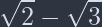
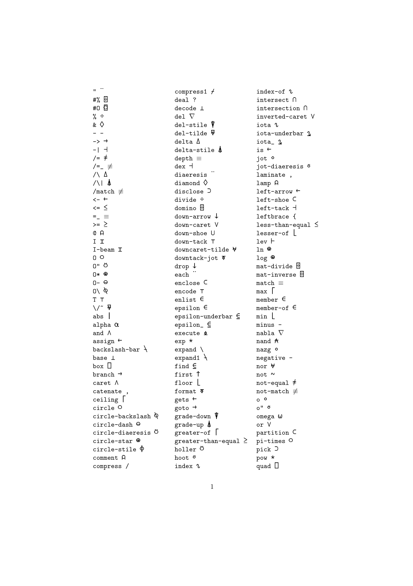
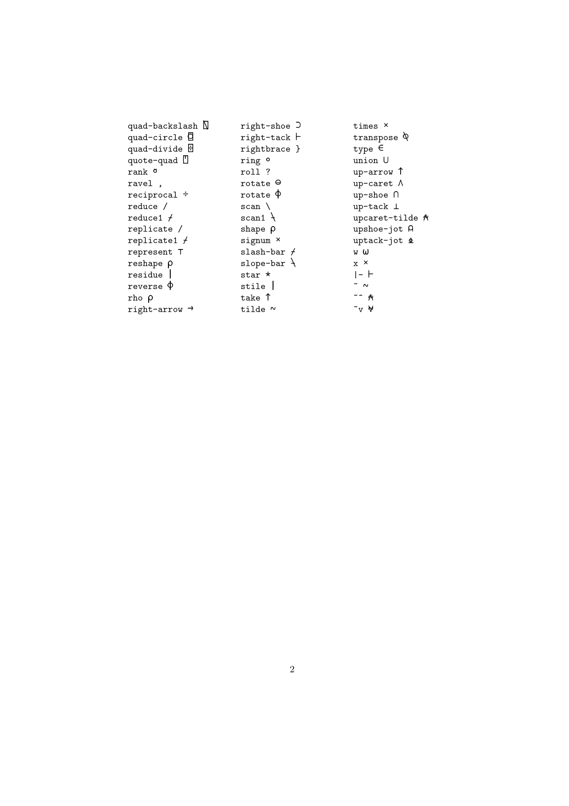

<!DOCTYPE html>
<html xmlns="http://www.w3.org/1999/xhtml" lang="en" xml:lang="en"><head>

<meta charset="utf-8">
<meta name="generator" content="quarto-1.8.11">

<meta name="viewport" content="width=device-width, initial-scale=1.0, user-scalable=yes">

<meta name="author" content="Iris Lennon">
<meta name="dcterms.date" content="2025-06-02">
<meta name="description" content="how i handle the configuration details of these tools">

<title>Typst and LaTeX,and… – Iris's Blog</title>
<style>
code{white-space: pre-wrap;}
span.smallcaps{font-variant: small-caps;}
div.columns{display: flex; gap: min(4vw, 1.5em);}
div.column{flex: auto; overflow-x: auto;}
div.hanging-indent{margin-left: 1.5em; text-indent: -1.5em;}
ul.task-list{list-style: none;}
ul.task-list li input[type="checkbox"] {
  width: 0.8em;
  margin: 0 0.8em 0.2em -1em; /* quarto-specific, see https://github.com/quarto-dev/quarto-cli/issues/4556 */ 
  vertical-align: middle;
}
/* CSS for syntax highlighting */
html { -webkit-text-size-adjust: 100%; }
pre > code.sourceCode { white-space: pre; position: relative; }
pre > code.sourceCode > span { display: inline-block; line-height: 1.25; }
pre > code.sourceCode > span:empty { height: 1.2em; }
.sourceCode { overflow: visible; }
code.sourceCode > span { color: inherit; text-decoration: inherit; }
div.sourceCode { margin: 1em 0; }
pre.sourceCode { margin: 0; }
@media screen {
div.sourceCode { overflow: auto; }
}
@media print {
pre > code.sourceCode { white-space: pre-wrap; }
pre > code.sourceCode > span { text-indent: -5em; padding-left: 5em; }
}
pre.numberSource code
  { counter-reset: source-line 0; }
pre.numberSource code > span
  { position: relative; left: -4em; counter-increment: source-line; }
pre.numberSource code > span > a:first-child::before
  { content: counter(source-line);
    position: relative; left: -1em; text-align: right; vertical-align: baseline;
    border: none; display: inline-block;
    -webkit-touch-callout: none; -webkit-user-select: none;
    -khtml-user-select: none; -moz-user-select: none;
    -ms-user-select: none; user-select: none;
    padding: 0 4px; width: 4em;
  }
pre.numberSource { margin-left: 3em;  padding-left: 4px; }
div.sourceCode
  {   }
@media screen {
pre > code.sourceCode > span > a:first-child::before { text-decoration: underline; }
}
</style>


<script src="../../site_libs/quarto-nav/quarto-nav.js"></script>
<script src="../../site_libs/quarto-nav/headroom.min.js"></script>
<script src="../../site_libs/clipboard/clipboard.min.js"></script>
<script src="../../site_libs/quarto-search/autocomplete.umd.js"></script>
<script src="../../site_libs/quarto-search/fuse.min.js"></script>
<script src="../../site_libs/quarto-search/quarto-search.js"></script>
<meta name="quarto:offset" content="../../">
<script src="../../site_libs/quarto-html/quarto.js" type="module"></script>
<script src="../../site_libs/quarto-html/tabsets/tabsets.js" type="module"></script>
<script src="../../site_libs/quarto-html/axe/axe-check.js" type="module"></script>
<script src="../../site_libs/quarto-html/popper.min.js"></script>
<script src="../../site_libs/quarto-html/tippy.umd.min.js"></script>
<script src="../../site_libs/quarto-html/anchor.min.js"></script>
<link href="../../site_libs/quarto-html/tippy.css" rel="stylesheet">
<link href="../../site_libs/quarto-html/quarto-syntax-highlighting-09b140d2d032adf2aedb8b099be3ee13.css" rel="stylesheet" class="quarto-color-scheme" id="quarto-text-highlighting-styles">
<link href="../../site_libs/quarto-html/quarto-syntax-highlighting-dark-26de2546b5e3740ec1b2731ec027ff26.css" rel="stylesheet" class="quarto-color-scheme quarto-color-alternate" id="quarto-text-highlighting-styles">
<link href="../../site_libs/quarto-html/quarto-syntax-highlighting-09b140d2d032adf2aedb8b099be3ee13.css" rel="stylesheet" class="quarto-color-scheme-extra" id="quarto-text-highlighting-styles">
<script src="../../site_libs/bootstrap/bootstrap.min.js"></script>
<link href="../../site_libs/bootstrap/bootstrap-icons.css" rel="stylesheet">
<link href="../../site_libs/bootstrap/bootstrap-78810e1e6432e7ba6bb6f8250697ccaf.min.css" rel="stylesheet" append-hash="true" class="quarto-color-scheme" id="quarto-bootstrap" data-mode="light">
<link href="../../site_libs/bootstrap/bootstrap-dark-fd333ad575316830b6de81cb34625f9a.min.css" rel="stylesheet" append-hash="true" class="quarto-color-scheme quarto-color-alternate" id="quarto-bootstrap" data-mode="dark">
<link href="../../site_libs/bootstrap/bootstrap-78810e1e6432e7ba6bb6f8250697ccaf.min.css" rel="stylesheet" append-hash="true" class="quarto-color-scheme-extra" id="quarto-bootstrap" data-mode="light">
<script id="quarto-search-options" type="application/json">{
  "location": "navbar",
  "copy-button": false,
  "collapse-after": 3,
  "panel-placement": "end",
  "type": "overlay",
  "limit": 50,
  "keyboard-shortcut": [
    "f",
    "/",
    "s"
  ],
  "language": {
    "search-no-results-text": "No results",
    "search-matching-documents-text": "matching documents",
    "search-copy-link-title": "Copy link to search",
    "search-hide-matches-text": "Hide additional matches",
    "search-more-match-text": "more match in this document",
    "search-more-matches-text": "more matches in this document",
    "search-clear-button-title": "Clear",
    "search-text-placeholder": "",
    "search-detached-cancel-button-title": "Cancel",
    "search-submit-button-title": "Submit",
    "search-label": "Search"
  }
}</script>

  <script src="https://cdnjs.cloudflare.com/polyfill/v3/polyfill.min.js?features=es6"></script>
  <script src="https://cdn.jsdelivr.net/npm/mathjax@3/es5/tex-chtml-full.js" type="text/javascript"></script>

<script type="text/javascript">
const typesetMath = (el) => {
  if (window.MathJax) {
    // MathJax Typeset
    window.MathJax.typeset([el]);
  } else if (window.katex) {
    // KaTeX Render
    var mathElements = el.getElementsByClassName("math");
    var macros = [];
    for (var i = 0; i < mathElements.length; i++) {
      var texText = mathElements[i].firstChild;
      if (mathElements[i].tagName == "SPAN" && texText && texText.data) {
        window.katex.render(texText.data, mathElements[i], {
          displayMode: mathElements[i].classList.contains('display'),
          throwOnError: false,
          macros: macros,
          fleqn: false
        });
      }
    }
  }
}
window.Quarto = {
  typesetMath
};
</script>

<link rel="stylesheet" href="../../styles.css">
<meta property="og:title" content="Typst and LaTeX,and… – Iris’s Blog">
<meta property="og:description" content="how i handle the configuration details of these tools">
<meta property="og:image" content="maxima.png">
<meta property="og:site_name" content="Iris's Blog">
<meta property="og:locale" content="zh_CN">
</head>

<body class="nav-fixed fullcontent quarto-light"><script id="quarto-html-before-body" type="application/javascript">
    const toggleBodyColorMode = (bsSheetEl) => {
      const mode = bsSheetEl.getAttribute("data-mode");
      const bodyEl = window.document.querySelector("body");
      if (mode === "dark") {
        bodyEl.classList.add("quarto-dark");
        bodyEl.classList.remove("quarto-light");
      } else {
        bodyEl.classList.add("quarto-light");
        bodyEl.classList.remove("quarto-dark");
      }
    }
    const toggleBodyColorPrimary = () => {
      const bsSheetEl = window.document.querySelector("link#quarto-bootstrap:not([rel=disabled-stylesheet])");
      if (bsSheetEl) {
        toggleBodyColorMode(bsSheetEl);
      }
    }
    const setColorSchemeToggle = (alternate) => {
      const toggles = window.document.querySelectorAll('.quarto-color-scheme-toggle');
      for (let i=0; i < toggles.length; i++) {
        const toggle = toggles[i];
        if (toggle) {
          if (alternate) {
            toggle.classList.add("alternate");
          } else {
            toggle.classList.remove("alternate");
          }
        }
      }
    };
    const toggleColorMode = (alternate) => {
      // Switch the stylesheets
      const primaryStylesheets = window.document.querySelectorAll('link.quarto-color-scheme:not(.quarto-color-alternate)');
      const alternateStylesheets = window.document.querySelectorAll('link.quarto-color-scheme.quarto-color-alternate');
      manageTransitions('#quarto-margin-sidebar .nav-link', false);
      if (alternate) {
        // note: dark is layered on light, we don't disable primary!
        enableStylesheet(alternateStylesheets);
        for (const sheetNode of alternateStylesheets) {
          if (sheetNode.id === "quarto-bootstrap") {
            toggleBodyColorMode(sheetNode);
          }
        }
      } else {
        disableStylesheet(alternateStylesheets);
        enableStylesheet(primaryStylesheets)
        toggleBodyColorPrimary();
      }
      manageTransitions('#quarto-margin-sidebar .nav-link', true);
      // Switch the toggles
      setColorSchemeToggle(alternate)
      // Hack to workaround the fact that safari doesn't
      // properly recolor the scrollbar when toggling (#1455)
      if (navigator.userAgent.indexOf('Safari') > 0 && navigator.userAgent.indexOf('Chrome') == -1) {
        manageTransitions("body", false);
        window.scrollTo(0, 1);
        setTimeout(() => {
          window.scrollTo(0, 0);
          manageTransitions("body", true);
        }, 40);
      }
    }
    const disableStylesheet = (stylesheets) => {
      for (let i=0; i < stylesheets.length; i++) {
        const stylesheet = stylesheets[i];
        stylesheet.rel = 'disabled-stylesheet';
      }
    }
    const enableStylesheet = (stylesheets) => {
      for (let i=0; i < stylesheets.length; i++) {
        const stylesheet = stylesheets[i];
        if(stylesheet.rel !== 'stylesheet') { // for Chrome, which will still FOUC without this check
          stylesheet.rel = 'stylesheet';
        }
      }
    }
    const manageTransitions = (selector, allowTransitions) => {
      const els = window.document.querySelectorAll(selector);
      for (let i=0; i < els.length; i++) {
        const el = els[i];
        if (allowTransitions) {
          el.classList.remove('notransition');
        } else {
          el.classList.add('notransition');
        }
      }
    }
    const isFileUrl = () => {
      return window.location.protocol === 'file:';
    }
    const hasAlternateSentinel = () => {
      let styleSentinel = getColorSchemeSentinel();
      if (styleSentinel !== null) {
        return styleSentinel === "alternate";
      } else {
        return false;
      }
    }
    const setStyleSentinel = (alternate) => {
      const value = alternate ? "alternate" : "default";
      if (!isFileUrl()) {
        window.localStorage.setItem("quarto-color-scheme", value);
      } else {
        localAlternateSentinel = value;
      }
    }
    const getColorSchemeSentinel = () => {
      if (!isFileUrl()) {
        const storageValue = window.localStorage.getItem("quarto-color-scheme");
        return storageValue != null ? storageValue : localAlternateSentinel;
      } else {
        return localAlternateSentinel;
      }
    }
    const toggleGiscusIfUsed = (isAlternate, darkModeDefault) => {
      const baseTheme = document.querySelector('#giscus-base-theme')?.value ?? 'light';
      const alternateTheme = document.querySelector('#giscus-alt-theme')?.value ?? 'dark';
      let newTheme = '';
      if(authorPrefersDark) {
        newTheme = isAlternate ? baseTheme : alternateTheme;
      } else {
        newTheme = isAlternate ? alternateTheme : baseTheme;
      }
      const changeGiscusTheme = () => {
        // From: https://github.com/giscus/giscus/issues/336
        const sendMessage = (message) => {
          const iframe = document.querySelector('iframe.giscus-frame');
          if (!iframe) return;
          iframe.contentWindow.postMessage({ giscus: message }, 'https://giscus.app');
        }
        sendMessage({
          setConfig: {
            theme: newTheme
          }
        });
      }
      const isGiscussLoaded = window.document.querySelector('iframe.giscus-frame') !== null;
      if (isGiscussLoaded) {
        changeGiscusTheme();
      }
    };
    const authorPrefersDark = false;
    const darkModeDefault = authorPrefersDark;
      document.querySelector('link#quarto-text-highlighting-styles.quarto-color-scheme-extra').rel = 'disabled-stylesheet';
      document.querySelector('link#quarto-bootstrap.quarto-color-scheme-extra').rel = 'disabled-stylesheet';
    let localAlternateSentinel = darkModeDefault ? 'alternate' : 'default';
    // Dark / light mode switch
    window.quartoToggleColorScheme = () => {
      // Read the current dark / light value
      let toAlternate = !hasAlternateSentinel();
      toggleColorMode(toAlternate);
      setStyleSentinel(toAlternate);
      toggleGiscusIfUsed(toAlternate, darkModeDefault);
      window.dispatchEvent(new Event('resize'));
    };
    // Switch to dark mode if need be
    if (hasAlternateSentinel()) {
      toggleColorMode(true);
    } else {
      toggleColorMode(false);
    }
  </script>

<div id="quarto-search-results"></div>
  <header id="quarto-header" class="headroom fixed-top quarto-banner">
    <nav class="navbar navbar-expand-lg " data-bs-theme="dark">
      <div class="navbar-container container-fluid">
      <div class="navbar-brand-container mx-auto">
    <a class="navbar-brand" href="../../index.html">
    <span class="navbar-title">Iris’s Blog</span>
    </a>
  </div>
            <div id="quarto-search" class="" title="Search"></div>
          <button class="navbar-toggler" type="button" data-bs-toggle="collapse" data-bs-target="#navbarCollapse" aria-controls="navbarCollapse" role="menu" aria-expanded="false" aria-label="Toggle navigation" onclick="if (window.quartoToggleHeadroom) { window.quartoToggleHeadroom(); }">
  <span class="navbar-toggler-icon"></span>
</button>
          <div class="collapse navbar-collapse" id="navbarCollapse">
            <ul class="navbar-nav navbar-nav-scroll ms-auto">
  <li class="nav-item">
    <a class="nav-link" href="../../about.html"> 
<span class="menu-text">About this Blog and Other.</span></a>
  </li>  
  <li class="nav-item compact">
    <a class="nav-link" href="https://github.com/ningxilai"> <i class="bi bi-github" role="img">
</i> 
<span class="menu-text"></span></a>
  </li>  
</ul>
          </div> <!-- /navcollapse -->
            <div class="quarto-navbar-tools">
  <a href="" class="quarto-color-scheme-toggle quarto-navigation-tool  px-1" onclick="window.quartoToggleColorScheme(); return false;" title="Toggle dark mode"><i class="bi"></i></a>
</div>
      </div> <!-- /container-fluid -->
    </nav>
</header>
<!-- content -->
<header id="title-block-header" class="quarto-title-block default page-columns page-full">
  <div class="quarto-title-banner page-columns page-full">
    <div class="quarto-title column-body">
      <h1 class="title">Typst and LaTeX,and…</h1>
                  <div>
        <div class="description">
          how i handle the configuration details of these tools
        </div>
      </div>
                          <div class="quarto-categories">
                <div class="quarto-category">Note</div>
                <div class="quarto-category">Editor</div>
                <div class="quarto-category">Input Method</div>
              </div>
                  </div>
  </div>
    
  
  <div class="quarto-title-meta">

      <div>
      <div class="quarto-title-meta-heading">Author</div>
      <div class="quarto-title-meta-contents">
               <p>Iris Lennon </p>
            </div>
    </div>
      
      <div>
      <div class="quarto-title-meta-heading">Published</div>
      <div class="quarto-title-meta-contents">
        <p class="date">June 2, 2025</p>
      </div>
    </div>
    
      <div>
      <div class="quarto-title-meta-heading">Modified</div>
      <div class="quarto-title-meta-contents">
        <p class="date-modified">June 2, 2025</p>
      </div>
    </div>
      
    </div>
    
  
  </header><div id="quarto-content" class="quarto-container page-columns page-rows-contents page-layout-article page-navbar">
<!-- sidebar -->
<!-- margin-sidebar -->
    
<!-- main -->
<main class="content quarto-banner-title-block" id="quarto-document-content">


<p><em>Writer</em></p>
<section id="typst" class="level2">
<h2 class="anchored" data-anchor-id="typst">Typst</h2>
<p><em>HTML</em></p>
<div class="sourceCode" id="cb1"><pre class="sourceCode bash code-with-copy"><code class="sourceCode bash"><span id="cb1-1"><a href="#cb1-1" aria-hidden="true" tabindex="-1"></a><span class="ex">typst</span> watch <span class="at">--features</span> html</span>
<span id="cb1-2"><a href="#cb1-2" aria-hidden="true" tabindex="-1"></a><span class="co">## or</span></span>
<span id="cb1-3"><a href="#cb1-3" aria-hidden="true" tabindex="-1"></a><span class="va">TYPST_FEATURES</span><span class="op">=</span>html</span></code><button title="Copy to Clipboard" class="code-copy-button"><i class="bi"></i></button></pre></div>
<section id="install" class="level3">
<h3 class="anchored" data-anchor-id="install">Install</h3>
<div class="sourceCode" id="cb2"><pre class="sourceCode bash code-with-copy"><code class="sourceCode bash"><span id="cb2-1"><a href="#cb2-1" aria-hidden="true" tabindex="-1"></a><span class="ex">cargo</span> install <span class="at">--git</span> https://github.com/typst/typst.git <span class="at">--locked</span> typst-cli</span></code><button title="Copy to Clipboard" class="code-copy-button"><i class="bi"></i></button></pre></div>
</section>
<section id="on-vsc" class="level3">
<h3 class="anchored" data-anchor-id="on-vsc">on VSC</h3>
<div class="sourceCode" id="cb3"><pre class="sourceCode bash code-with-copy"><code class="sourceCode bash"><span id="cb3-1"><a href="#cb3-1" aria-hidden="true" tabindex="-1"></a><span class="fu">sudo</span> pacman <span class="at">-S</span> code <span class="kw">&amp;&amp;</span> <span class="ex">ext</span> install myriad-dreamin.tinymist</span></code><button title="Copy to Clipboard" class="code-copy-button"><i class="bi"></i></button></pre></div>
</section>
</section>
<section id="latex" class="level2">
<h2 class="anchored" data-anchor-id="latex">LaTeX</h2>
<div class="sourceCode" id="cb4"><pre class="sourceCode bash code-with-copy"><code class="sourceCode bash"><span id="cb4-1"><a href="#cb4-1" aria-hidden="true" tabindex="-1"></a><span class="fu">sudo</span> pacman <span class="at">-S</span> perl-tk <span class="co">## Option</span></span>
<span id="cb4-2"><a href="#cb4-2" aria-hidden="true" tabindex="-1"></a><span class="bu">cd</span> /tmp</span>
<span id="cb4-3"><a href="#cb4-3" aria-hidden="true" tabindex="-1"></a><span class="ex">wget2</span> https://mirrors.tuna.tsinghua.edu.cn/CTAN/systems/texlive/Images/texlive2025-20250308.iso</span>
<span id="cb4-4"><a href="#cb4-4" aria-hidden="true" tabindex="-1"></a><span class="fu">sudo</span> mkdir /mnt/iso</span>
<span id="cb4-5"><a href="#cb4-5" aria-hidden="true" tabindex="-1"></a><span class="fu">sudo</span> mount texlive2025-20250308.iso /mnt/iso/</span>
<span id="cb4-6"><a href="#cb4-6" aria-hidden="true" tabindex="-1"></a><span class="fu">sudo</span> perl ./install-tl <span class="at">--gui</span> <span class="co">## Advanced =&gt; checkmake Create symlinks in standard directory.</span></span>
<span id="cb4-7"><a href="#cb4-7" aria-hidden="true" tabindex="-1"></a></span>
<span id="cb4-8"><a href="#cb4-8" aria-hidden="true" tabindex="-1"></a><span class="co">## Post install</span></span>
<span id="cb4-9"><a href="#cb4-9" aria-hidden="true" tabindex="-1"></a></span>
<span id="cb4-10"><a href="#cb4-10" aria-hidden="true" tabindex="-1"></a><span class="fu">sudo</span> tlmgr option repository https://mirrors.tuna.tsinghua.edu.cn/CTAN/systems/texlive/tlnet</span>
<span id="cb4-11"><a href="#cb4-11" aria-hidden="true" tabindex="-1"></a><span class="fu">sudo</span> tlmgr update <span class="at">--all</span> <span class="co"># sudo tlmgr update --self --all</span></span></code><button title="Copy to Clipboard" class="code-copy-button"><i class="bi"></i></button></pre></div>
<section id="tlmgr" class="level3">
<h3 class="anchored" data-anchor-id="tlmgr">tlmgr</h3>
<p>使用<code>tlmgr install [package]</code>时，如果给出<code>tlmgr install: package [package] not present in repository.</code>，则应当考虑<code>package</code>为一子包的可能，应安装其父包。</p>
</section>
<section id="texmacs" class="level3">
<h3 class="anchored" data-anchor-id="texmacs">TeXmacs</h3>
<p><code>flatpak install org.texmacs.TeXmacs</code></p>
<section id="fonts" class="level4">
<h4 class="anchored" data-anchor-id="fonts">fonts</h4>
<p>=&gt; <code>$PATH=$HOME/Documents/*</code></p>
</section>
</section>
<section id="global-tex-font" class="level3">
<h3 class="anchored" data-anchor-id="global-tex-font">Global TeX Font</h3>
<div class="sourceCode" id="cb5"><pre class="sourceCode bash code-with-copy"><code class="sourceCode bash"><span id="cb5-1"><a href="#cb5-1" aria-hidden="true" tabindex="-1"></a><span class="fu">sudo</span> cp /usr/local/texlive/<span class="pp">[</span><span class="ss">version</span><span class="pp">]</span>/texmf-var/fonts/conf/texlive-fontconfig.conf /etc/fonts/conf.d/09-<span class="pp">[</span><span class="ss">context</span><span class="pp">]</span>.conf</span>
<span id="cb5-2"><a href="#cb5-2" aria-hidden="true" tabindex="-1"></a><span class="fu">sudo</span> fc-cache <span class="at">-fv</span></span></code><button title="Copy to Clipboard" class="code-copy-button"><i class="bi"></i></button></pre></div>
</section>
<section id="debug" class="level3">
<h3 class="anchored" data-anchor-id="debug">Debug</h3>
<p><em>Perl/LaTeX</em></p>
<hr>
<p><code>latex-git-log</code> =&gt;</p>
<pre><code>-- Can't locate IPC/System/Simple.pm in @INC (you may need to install the IPC::System::Simple module) (@INC entries checked: /usr/lib/perl5/5.40/site_perl /usr/share/perl5/site_perl /usr/lib/perl5/5.40/vendor_perl /usr/share/perl5/vendor_perl /usr/lib/perl5/5.40/core_perl /usr/share/perl5/core_perl) at /usr/local/texlive/2025/bin/x86_64-linux/latex-git-log line 15.
-- BEGIN failed--compilation aborted at /usr/local/texlive/2025/bin/x86_64-linux/latex-git-log line 15.</code></pre>
<div class="sourceCode" id="cb7"><pre class="sourceCode bash code-with-copy"><code class="sourceCode bash"><span id="cb7-1"><a href="#cb7-1" aria-hidden="true" tabindex="-1"></a><span class="fu">sudo</span> perl <span class="at">-MCPAN</span> <span class="at">-e</span> shell </span>
<span id="cb7-2"><a href="#cb7-2" aria-hidden="true" tabindex="-1"></a><span class="co">## xor cpan shell </span></span>
<span id="cb7-3"><a href="#cb7-3" aria-hidden="true" tabindex="-1"></a><span class="co"># &lt;= o conf urllist unshift https://mirrors.tuna.tsinghua.edu.cn/CPAN/ </span></span>
<span id="cb7-4"><a href="#cb7-4" aria-hidden="true" tabindex="-1"></a><span class="co"># &lt;= o conf pushy_https 0 </span></span>
<span id="cb7-5"><a href="#cb7-5" aria-hidden="true" tabindex="-1"></a><span class="co"># &lt;= o conf commit </span></span>
<span id="cb7-6"><a href="#cb7-6" aria-hidden="true" tabindex="-1"></a><span class="co"># &lt;= quit</span></span></code><button title="Copy to Clipboard" class="code-copy-button"><i class="bi"></i></button></pre></div>
<div class="sourceCode" id="cb8"><pre class="sourceCode perl code-with-copy"><code class="sourceCode perl"><span id="cb8-1"><a href="#cb8-1" aria-hidden="true" tabindex="-1"></a>install IPC/System/Simple.pm</span></code><button title="Copy to Clipboard" class="code-copy-button"><i class="bi"></i></button></pre></div>
</section>
</section>
<section id="maxima" class="level2">
<h2 class="anchored" data-anchor-id="maxima">Maxima</h2>
<p><em>Option</em></p>
<hr>
<p><code>maxima</code>内有<code>tex</code>函数，可将在其内部的表达式转化为合法的<span class="math inline">\(\LaTeX\)</span>形式给出。</p>
<div class="sourceCode" id="cb9"><pre class="sourceCode maxima code-with-copy"><code class="sourceCode maxima"><span id="cb9-1"><a href="#cb9-1" aria-hidden="true" tabindex="-1"></a><span class="fu">tex</span>(<span class="fu">sqrt</span>(<span class="dv">2</span>)-<span class="fu">sqrt</span>(<span class="dv">3</span>))</span></code><button title="Copy to Clipboard" class="code-copy-button"><i class="bi"></i></button></pre></div>
<p>=&gt; <span class="math inline">\(\sqrt{2}-\sqrt{3}\)</span></p>
<p></p>
</section>
<section id="gnu-apl" class="level2">
<h2 class="anchored" data-anchor-id="gnu-apl">GNU APL</h2>
<p><em>option</em> <em>input method</em></p>
<p><a href="&quot;https://www.metalevel.at/unicapl/asciiapl.pdf&quot;">asciiapl.pdf</a></p>
<p> </p>
<hr>
<div class="sourceCode" id="cb10"><pre class="sourceCode lisp code-with-copy"><code class="sourceCode commonlisp"><span id="cb10-1"><a href="#cb10-1" aria-hidden="true" tabindex="-1"></a>(<span class="kw">require</span> <span class="dt">'apl</span>)</span>
<span id="cb10-2"><a href="#cb10-2" aria-hidden="true" tabindex="-1"></a>(set-input-method <span class="st">"apl-ascii"</span>) <span class="co">;; https://www.metalevel.at/unicapl/</span></span></code><button title="Copy to Clipboard" class="code-copy-button"><i class="bi"></i></button></pre></div>
<div class="sourceCode" id="cb11"><pre class="sourceCode lisp code-with-copy"><code class="sourceCode commonlisp"><span id="cb11-1"><a href="#cb11-1" aria-hidden="true" tabindex="-1"></a><span class="co">;;; apl.el --- APL input method for Emacs  -*- lexical-binding: t; -*-</span></span>
<span id="cb11-2"><a href="#cb11-2" aria-hidden="true" tabindex="-1"></a></span>
<span id="cb11-3"><a href="#cb11-3" aria-hidden="true" tabindex="-1"></a><span class="co">;; Author: Markus Triska &lt;triska@metalevel.at&gt;</span></span>
<span id="cb11-4"><a href="#cb11-4" aria-hidden="true" tabindex="-1"></a><span class="co">;; Homepage: https://www.metalevel.at/unicapl/</span></span>
<span id="cb11-5"><a href="#cb11-5" aria-hidden="true" tabindex="-1"></a><span class="co">;; Keywords: languages</span></span>
<span id="cb11-6"><a href="#cb11-6" aria-hidden="true" tabindex="-1"></a></span>
<span id="cb11-7"><a href="#cb11-7" aria-hidden="true" tabindex="-1"></a><span class="co">;; Public domain code.</span></span>
<span id="cb11-8"><a href="#cb11-8" aria-hidden="true" tabindex="-1"></a></span>
<span id="cb11-9"><a href="#cb11-9" aria-hidden="true" tabindex="-1"></a><span class="co">;;; Commentary:</span></span>
<span id="cb11-10"><a href="#cb11-10" aria-hidden="true" tabindex="-1"></a></span>
<span id="cb11-11"><a href="#cb11-11" aria-hidden="true" tabindex="-1"></a><span class="co">;; Copy apl.el to your load-path and add to your .emacs:</span></span>
<span id="cb11-12"><a href="#cb11-12" aria-hidden="true" tabindex="-1"></a></span>
<span id="cb11-13"><a href="#cb11-13" aria-hidden="true" tabindex="-1"></a><span class="co">;;     (require 'apl)</span></span>
<span id="cb11-14"><a href="#cb11-14" aria-hidden="true" tabindex="-1"></a></span>
<span id="cb11-15"><a href="#cb11-15" aria-hidden="true" tabindex="-1"></a><span class="co">;; Enable the APL input method with</span></span>
<span id="cb11-16"><a href="#cb11-16" aria-hidden="true" tabindex="-1"></a></span>
<span id="cb11-17"><a href="#cb11-17" aria-hidden="true" tabindex="-1"></a><span class="co">;;     M-x set-input-method RET apl-ascii RET</span></span>
<span id="cb11-18"><a href="#cb11-18" aria-hidden="true" tabindex="-1"></a></span>
<span id="cb11-19"><a href="#cb11-19" aria-hidden="true" tabindex="-1"></a><span class="co">;; Then enter {iota}, {times}, {execute} etc.</span></span>
<span id="cb11-20"><a href="#cb11-20" aria-hidden="true" tabindex="-1"></a></span>
<span id="cb11-21"><a href="#cb11-21" aria-hidden="true" tabindex="-1"></a><span class="co">;;; Code:</span></span>
<span id="cb11-22"><a href="#cb11-22" aria-hidden="true" tabindex="-1"></a></span>
<span id="cb11-23"><a href="#cb11-23" aria-hidden="true" tabindex="-1"></a>(defconst apl-version <span class="st">"0.9-PRE"</span>)</span>
<span id="cb11-24"><a href="#cb11-24" aria-hidden="true" tabindex="-1"></a></span>
<span id="cb11-25"><a href="#cb11-25" aria-hidden="true" tabindex="-1"></a>(<span class="kw">defvar</span><span class="fu"> apl-ascii-codepoint</span></span>
<span id="cb11-26"><a href="#cb11-26" aria-hidden="true" tabindex="-1"></a>  '((<span class="st">"{#%}"</span> . ?\x2339)</span>
<span id="cb11-27"><a href="#cb11-27" aria-hidden="true" tabindex="-1"></a>    (<span class="st">"{#&amp;}"</span> . ?\x233a)</span>
<span id="cb11-28"><a href="#cb11-28" aria-hidden="true" tabindex="-1"></a>    (<span class="st">"{#/=}"</span> . ?\x236f)</span>
<span id="cb11-29"><a href="#cb11-29" aria-hidden="true" tabindex="-1"></a>    (<span class="st">"{#/</span><span class="sc">\\</span><span class="st">}"</span> . ?\x234d)</span>
<span id="cb11-30"><a href="#cb11-30" aria-hidden="true" tabindex="-1"></a>    (<span class="st">"{#/}"</span> . ?\x2341)</span>
<span id="cb11-31"><a href="#cb11-31" aria-hidden="true" tabindex="-1"></a>    (<span class="st">"{#:}"</span> . ?\x2360)</span>
<span id="cb11-32"><a href="#cb11-32" aria-hidden="true" tabindex="-1"></a>    (<span class="st">"{#&lt;}"</span> . ?\x2343)</span>
<span id="cb11-33"><a href="#cb11-33" aria-hidden="true" tabindex="-1"></a>    (<span class="st">"{#=}"</span> . ?\x2338)</span>
<span id="cb11-34"><a href="#cb11-34" aria-hidden="true" tabindex="-1"></a>    (<span class="st">"{#&gt;}"</span> . ?\x2344)</span>
<span id="cb11-35"><a href="#cb11-35" aria-hidden="true" tabindex="-1"></a>    (<span class="st">"{#?}"</span> . ?\x2370)</span>
<span id="cb11-36"><a href="#cb11-36" aria-hidden="true" tabindex="-1"></a>    (<span class="st">"{#O}"</span> . ?\x233c)</span>
<span id="cb11-37"><a href="#cb11-37" aria-hidden="true" tabindex="-1"></a>    (<span class="st">"{</span><span class="ch">#\\</span><span class="st">/}"</span> . ?\x2354)</span>
<span id="cb11-38"><a href="#cb11-38" aria-hidden="true" tabindex="-1"></a>    (<span class="st">"{</span><span class="ch">#\}</span><span class="st">"</span> . ?\x2342)</span>
<span id="cb11-39"><a href="#cb11-39" aria-hidden="true" tabindex="-1"></a>    (<span class="st">"{#^}"</span> . ?\x2353)</span>
<span id="cb11-40"><a href="#cb11-40" aria-hidden="true" tabindex="-1"></a>    (<span class="st">"{#o}"</span> . ?\x233b)</span>
<span id="cb11-41"><a href="#cb11-41" aria-hidden="true" tabindex="-1"></a>    (<span class="st">"{#v}"</span> . ?\x234c)</span>
<span id="cb11-42"><a href="#cb11-42" aria-hidden="true" tabindex="-1"></a>    (<span class="st">"{%}"</span> . ?\xf7)</span>
<span id="cb11-43"><a href="#cb11-43" aria-hidden="true" tabindex="-1"></a>    (<span class="st">"{&amp;_}"</span> . ?\x235a)</span>
<span id="cb11-44"><a href="#cb11-44" aria-hidden="true" tabindex="-1"></a>    (<span class="st">"{&amp;}"</span> . ?\x22c4)</span>
<span id="cb11-45"><a href="#cb11-45" aria-hidden="true" tabindex="-1"></a>    (<span class="st">"{'_}"</span> . ?\x2358)</span>
<span id="cb11-46"><a href="#cb11-46" aria-hidden="true" tabindex="-1"></a>    (<span class="st">"{,-}"</span> . ?\x236a)</span>
<span id="cb11-47"><a href="#cb11-47" aria-hidden="true" tabindex="-1"></a>    (<span class="st">"{-&gt;}"</span> . ?\x2192)</span>
<span id="cb11-48"><a href="#cb11-48" aria-hidden="true" tabindex="-1"></a>    (<span class="st">"{-|}"</span> . ?\x22a3)</span>
<span id="cb11-49"><a href="#cb11-49" aria-hidden="true" tabindex="-1"></a>    (<span class="st">"{-}"</span> . ?\x2212)</span>
<span id="cb11-50"><a href="#cb11-50" aria-hidden="true" tabindex="-1"></a>    (<span class="st">"{/=_}"</span> . ?\x2262)</span>
<span id="cb11-51"><a href="#cb11-51" aria-hidden="true" tabindex="-1"></a>    (<span class="st">"{/=}"</span> . ?\x2260)</span>
<span id="cb11-52"><a href="#cb11-52" aria-hidden="true" tabindex="-1"></a>    (<span class="st">"{/</span><span class="sc">\\</span><span class="st">_}"</span> . ?\x2359)</span>
<span id="cb11-53"><a href="#cb11-53" aria-hidden="true" tabindex="-1"></a>    (<span class="st">"{/</span><span class="sc">\\</span><span class="st">|}"</span> . ?\x234b)</span>
<span id="cb11-54"><a href="#cb11-54" aria-hidden="true" tabindex="-1"></a>    (<span class="st">"{/</span><span class="sc">\\</span><span class="st">}"</span> . ?\x2206)</span>
<span id="cb11-55"><a href="#cb11-55" aria-hidden="true" tabindex="-1"></a>    (<span class="st">"{/match}"</span> . ?\x2262)</span>
<span id="cb11-56"><a href="#cb11-56" aria-hidden="true" tabindex="-1"></a>    (<span class="st">"{0~}"</span> . ?\x236c)</span>
<span id="cb11-57"><a href="#cb11-57" aria-hidden="true" tabindex="-1"></a>    (<span class="st">"{;_}"</span> . ?\x236e)</span>
<span id="cb11-58"><a href="#cb11-58" aria-hidden="true" tabindex="-1"></a>    (<span class="st">"{&lt;-}"</span> . ?\x2190)</span>
<span id="cb11-59"><a href="#cb11-59" aria-hidden="true" tabindex="-1"></a>    (<span class="st">"{&lt;=}"</span> . ?\x2264)</span>
<span id="cb11-60"><a href="#cb11-60" aria-hidden="true" tabindex="-1"></a>    (<span class="st">"{=_}"</span> . ?\x2261)</span>
<span id="cb11-61"><a href="#cb11-61" aria-hidden="true" tabindex="-1"></a>    (<span class="st">"{&gt;=}"</span> . ?\x2265)</span>
<span id="cb11-62"><a href="#cb11-62" aria-hidden="true" tabindex="-1"></a>    (<span class="st">"{&gt;</span><span class="sc">\"</span><span class="st">}"</span> . ?\x2369)</span>
<span id="cb11-63"><a href="#cb11-63" aria-hidden="true" tabindex="-1"></a>    (<span class="st">"{@}"</span> . ?\x235d)</span>
<span id="cb11-64"><a href="#cb11-64" aria-hidden="true" tabindex="-1"></a>    (<span class="st">"{I-beam}"</span> . ?\x2336)</span>
<span id="cb11-65"><a href="#cb11-65" aria-hidden="true" tabindex="-1"></a>    (<span class="st">"{I}"</span> . ?\x2336)</span>
<span id="cb11-66"><a href="#cb11-66" aria-hidden="true" tabindex="-1"></a>    (<span class="st">"{O*}"</span> . ?\x235f)</span>
<span id="cb11-67"><a href="#cb11-67" aria-hidden="true" tabindex="-1"></a>    (<span class="st">"{O-}"</span> . ?\x2296)</span>
<span id="cb11-68"><a href="#cb11-68" aria-hidden="true" tabindex="-1"></a>    (<span class="st">"{O</span><span class="sc">\"</span><span class="st">}"</span> . ?\x2365)</span>
<span id="cb11-69"><a href="#cb11-69" aria-hidden="true" tabindex="-1"></a>    (<span class="st">"{O</span><span class="sc">\\</span><span class="st">}"</span> . ?\x2349)</span>
<span id="cb11-70"><a href="#cb11-70" aria-hidden="true" tabindex="-1"></a>    (<span class="st">"{O_}"</span> . ?\x235c)</span>
<span id="cb11-71"><a href="#cb11-71" aria-hidden="true" tabindex="-1"></a>    (<span class="st">"{O}"</span> . ?\x25cb)</span>
<span id="cb11-72"><a href="#cb11-72" aria-hidden="true" tabindex="-1"></a>    (<span class="st">"{T}"</span> . ?\x22a4)</span>
<span id="cb11-73"><a href="#cb11-73" aria-hidden="true" tabindex="-1"></a>    (<span class="st">"{</span><span class="sc">\"</span><span class="st">}"</span> . ?\xa8)</span>
<span id="cb11-74"><a href="#cb11-74" aria-hidden="true" tabindex="-1"></a>    (<span class="st">"{</span><span class="sc">\\</span><span class="st">/~}"</span> . ?\x236b)</span>
<span id="cb11-75"><a href="#cb11-75" aria-hidden="true" tabindex="-1"></a>    (<span class="st">"{abs}"</span> . ?\x2223)</span>
<span id="cb11-76"><a href="#cb11-76" aria-hidden="true" tabindex="-1"></a>    (<span class="st">"{alpha-underbar}"</span> . ?\x2376)</span>
<span id="cb11-77"><a href="#cb11-77" aria-hidden="true" tabindex="-1"></a>    (<span class="st">"{alpha_}"</span> . ?\x2376)</span>
<span id="cb11-78"><a href="#cb11-78" aria-hidden="true" tabindex="-1"></a>    (<span class="st">"{alpha}"</span> . ?\x237a)</span>
<span id="cb11-79"><a href="#cb11-79" aria-hidden="true" tabindex="-1"></a>    (<span class="st">"{and-overbar}"</span> . ?\x22bc)</span>
<span id="cb11-80"><a href="#cb11-80" aria-hidden="true" tabindex="-1"></a>    (<span class="st">"{and}"</span> . ?\x2227)</span>
<span id="cb11-81"><a href="#cb11-81" aria-hidden="true" tabindex="-1"></a>    (<span class="st">"{assign}"</span> . ?\x2190)</span>
<span id="cb11-82"><a href="#cb11-82" aria-hidden="true" tabindex="-1"></a>    (<span class="st">"{backslash-bar}"</span> . ?\x2340)</span>
<span id="cb11-83"><a href="#cb11-83" aria-hidden="true" tabindex="-1"></a>    (<span class="st">"{base}"</span> . ?\x22a5)</span>
<span id="cb11-84"><a href="#cb11-84" aria-hidden="true" tabindex="-1"></a>    (<span class="st">"{box}"</span> . ?\x2395)</span>
<span id="cb11-85"><a href="#cb11-85" aria-hidden="true" tabindex="-1"></a>    (<span class="st">"{branch}"</span> . ?\x2192)</span>
<span id="cb11-86"><a href="#cb11-86" aria-hidden="true" tabindex="-1"></a>    (<span class="st">"{caret}"</span> . ?\x2227)</span>
<span id="cb11-87"><a href="#cb11-87" aria-hidden="true" tabindex="-1"></a>    (<span class="st">"{cat-bar}"</span> . ?\x236a)</span>
<span id="cb11-88"><a href="#cb11-88" aria-hidden="true" tabindex="-1"></a>    (<span class="st">"{catenate1}"</span> . ?\x236a)</span>
<span id="cb11-89"><a href="#cb11-89" aria-hidden="true" tabindex="-1"></a>    (<span class="st">"{catenate}"</span> . ?\x2c)</span>
<span id="cb11-90"><a href="#cb11-90" aria-hidden="true" tabindex="-1"></a>    (<span class="st">"{ceiling}"</span> . ?\x2308)</span>
<span id="cb11-91"><a href="#cb11-91" aria-hidden="true" tabindex="-1"></a>    (<span class="st">"{circle-backslash}"</span> . ?\x2349)</span>
<span id="cb11-92"><a href="#cb11-92" aria-hidden="true" tabindex="-1"></a>    (<span class="st">"{circle-dash}"</span> . ?\x2296)</span>
<span id="cb11-93"><a href="#cb11-93" aria-hidden="true" tabindex="-1"></a>    (<span class="st">"{circle-diaeresis}"</span> . ?\x2365)</span>
<span id="cb11-94"><a href="#cb11-94" aria-hidden="true" tabindex="-1"></a>    (<span class="st">"{circle-jot}"</span> . ?\x233e)</span>
<span id="cb11-95"><a href="#cb11-95" aria-hidden="true" tabindex="-1"></a>    (<span class="st">"{circle-star}"</span> . ?\x235f)</span>
<span id="cb11-96"><a href="#cb11-96" aria-hidden="true" tabindex="-1"></a>    (<span class="st">"{circle-stile}"</span> . ?\x233d)</span>
<span id="cb11-97"><a href="#cb11-97" aria-hidden="true" tabindex="-1"></a>    (<span class="st">"{circle-underbar}"</span> . ?\x235c)</span>
<span id="cb11-98"><a href="#cb11-98" aria-hidden="true" tabindex="-1"></a>    (<span class="st">"{circle_}"</span> . ?\x235c)</span>
<span id="cb11-99"><a href="#cb11-99" aria-hidden="true" tabindex="-1"></a>    (<span class="st">"{circle}"</span> . ?\x25cb)</span>
<span id="cb11-100"><a href="#cb11-100" aria-hidden="true" tabindex="-1"></a>    (<span class="st">"{comma-bar}"</span> . ?\x236a)</span>
<span id="cb11-101"><a href="#cb11-101" aria-hidden="true" tabindex="-1"></a>    (<span class="st">"{comment}"</span> . ?\x235d)</span>
<span id="cb11-102"><a href="#cb11-102" aria-hidden="true" tabindex="-1"></a>    (<span class="st">"{compress1}"</span> . ?\x233f)</span>
<span id="cb11-103"><a href="#cb11-103" aria-hidden="true" tabindex="-1"></a>    (<span class="st">"{compress}"</span> . ?\x2f)</span>
<span id="cb11-104"><a href="#cb11-104" aria-hidden="true" tabindex="-1"></a>    (<span class="st">"{deal}"</span> . ?\x3f)</span>
<span id="cb11-105"><a href="#cb11-105" aria-hidden="true" tabindex="-1"></a>    (<span class="st">"{decode}"</span> . ?\x22a5)</span>
<span id="cb11-106"><a href="#cb11-106" aria-hidden="true" tabindex="-1"></a>    (<span class="st">"{del-diaeresis}"</span> . ?\x2362)</span>
<span id="cb11-107"><a href="#cb11-107" aria-hidden="true" tabindex="-1"></a>    (<span class="st">"{del-stile}"</span> . ?\x2352)</span>
<span id="cb11-108"><a href="#cb11-108" aria-hidden="true" tabindex="-1"></a>    (<span class="st">"{del-tilde}"</span> . ?\x236b)</span>
<span id="cb11-109"><a href="#cb11-109" aria-hidden="true" tabindex="-1"></a>    (<span class="st">"{delta-stile}"</span> . ?\x234b)</span>
<span id="cb11-110"><a href="#cb11-110" aria-hidden="true" tabindex="-1"></a>    (<span class="st">"{delta-underbar}"</span> . ?\x2359)</span>
<span id="cb11-111"><a href="#cb11-111" aria-hidden="true" tabindex="-1"></a>    (<span class="st">"{delta_}"</span> . ?\x2359)</span>
<span id="cb11-112"><a href="#cb11-112" aria-hidden="true" tabindex="-1"></a>    (<span class="st">"{delta}"</span> . ?\x2206)</span>
<span id="cb11-113"><a href="#cb11-113" aria-hidden="true" tabindex="-1"></a>    (<span class="st">"{del}"</span> . ?\x2207)</span>
<span id="cb11-114"><a href="#cb11-114" aria-hidden="true" tabindex="-1"></a>    (<span class="st">"{depth}"</span> . ?\x2261)</span>
<span id="cb11-115"><a href="#cb11-115" aria-hidden="true" tabindex="-1"></a>    (<span class="st">"{dex}"</span> . ?\x22a3)</span>
<span id="cb11-116"><a href="#cb11-116" aria-hidden="true" tabindex="-1"></a>    (<span class="st">"{diaeresis}"</span> . ?\xa8)</span>
<span id="cb11-117"><a href="#cb11-117" aria-hidden="true" tabindex="-1"></a>    (<span class="st">"{diamond-underbar}"</span> . ?\x235a)</span>
<span id="cb11-118"><a href="#cb11-118" aria-hidden="true" tabindex="-1"></a>    (<span class="st">"{diamond_}"</span> . ?\x235a)</span>
<span id="cb11-119"><a href="#cb11-119" aria-hidden="true" tabindex="-1"></a>    (<span class="st">"{diamond}"</span> . ?\x22c4)</span>
<span id="cb11-120"><a href="#cb11-120" aria-hidden="true" tabindex="-1"></a>    (<span class="st">"{diaresis-dot}"</span> . ?\x2235)</span>
<span id="cb11-121"><a href="#cb11-121" aria-hidden="true" tabindex="-1"></a>    (<span class="st">"{disclose}"</span> . ?\x2283)</span>
<span id="cb11-122"><a href="#cb11-122" aria-hidden="true" tabindex="-1"></a>    (<span class="st">"{divide}"</span> . ?\xf7)</span>
<span id="cb11-123"><a href="#cb11-123" aria-hidden="true" tabindex="-1"></a>    (<span class="st">"{domino}"</span> . ?\x2339)</span>
<span id="cb11-124"><a href="#cb11-124" aria-hidden="true" tabindex="-1"></a>    (<span class="st">"{down-arrow}"</span> . ?\x2193)</span>
<span id="cb11-125"><a href="#cb11-125" aria-hidden="true" tabindex="-1"></a>    (<span class="st">"{down-caret}"</span> . ?\x2228)</span>
<span id="cb11-126"><a href="#cb11-126" aria-hidden="true" tabindex="-1"></a>    (<span class="st">"{down-shoe}"</span> . ?\x222a)</span>
<span id="cb11-127"><a href="#cb11-127" aria-hidden="true" tabindex="-1"></a>    (<span class="st">"{down-tack}"</span> . ?\x22a4)</span>
<span id="cb11-128"><a href="#cb11-128" aria-hidden="true" tabindex="-1"></a>    (<span class="st">"{down-vane}"</span> . ?\x2356)</span>
<span id="cb11-129"><a href="#cb11-129" aria-hidden="true" tabindex="-1"></a>    (<span class="st">"{downcaret-tilde}"</span> . ?\x2371)</span>
<span id="cb11-130"><a href="#cb11-130" aria-hidden="true" tabindex="-1"></a>    (<span class="st">"{downshoe-stile}"</span> . ?\x2366)</span>
<span id="cb11-131"><a href="#cb11-131" aria-hidden="true" tabindex="-1"></a>    (<span class="st">"{downtack-diaeresis}"</span> . ?\x2361)</span>
<span id="cb11-132"><a href="#cb11-132" aria-hidden="true" tabindex="-1"></a>    (<span class="st">"{downtack-jot}"</span> . ?\x2355)</span>
<span id="cb11-133"><a href="#cb11-133" aria-hidden="true" tabindex="-1"></a>    (<span class="st">"{downtack-overbar}"</span> . ?\x2351)</span>
<span id="cb11-134"><a href="#cb11-134" aria-hidden="true" tabindex="-1"></a>    (<span class="st">"{downwards-vane}"</span> . ?\x2356)</span>
<span id="cb11-135"><a href="#cb11-135" aria-hidden="true" tabindex="-1"></a>    (<span class="st">"{drop}"</span> . ?\x2193)</span>
<span id="cb11-136"><a href="#cb11-136" aria-hidden="true" tabindex="-1"></a>    (<span class="st">"{each}"</span> . ?\xa8)</span>
<span id="cb11-137"><a href="#cb11-137" aria-hidden="true" tabindex="-1"></a>    (<span class="st">"{enclose}"</span> . ?\x2282)</span>
<span id="cb11-138"><a href="#cb11-138" aria-hidden="true" tabindex="-1"></a>    (<span class="st">"{encode}"</span> . ?\x22a4)</span>
<span id="cb11-139"><a href="#cb11-139" aria-hidden="true" tabindex="-1"></a>    (<span class="st">"{enlist}"</span> . ?\x2208)</span>
<span id="cb11-140"><a href="#cb11-140" aria-hidden="true" tabindex="-1"></a>    (<span class="st">"{epsilon-underbar}"</span> . ?\x2377)</span>
<span id="cb11-141"><a href="#cb11-141" aria-hidden="true" tabindex="-1"></a>    (<span class="st">"{epsilon_}"</span> . ?\x2377)</span>
<span id="cb11-142"><a href="#cb11-142" aria-hidden="true" tabindex="-1"></a>    (<span class="st">"{epsilon}"</span> . ?\x2208)</span>
<span id="cb11-143"><a href="#cb11-143" aria-hidden="true" tabindex="-1"></a>    (<span class="st">"{execute}"</span> . ?\x234e)</span>
<span id="cb11-144"><a href="#cb11-144" aria-hidden="true" tabindex="-1"></a>    (<span class="st">"{expand1}"</span> . ?\x2340)</span>
<span id="cb11-145"><a href="#cb11-145" aria-hidden="true" tabindex="-1"></a>    (<span class="st">"{expand}"</span> . ?\x5c)</span>
<span id="cb11-146"><a href="#cb11-146" aria-hidden="true" tabindex="-1"></a>    (<span class="st">"{exp}"</span> . ?\x22c6)</span>
<span id="cb11-147"><a href="#cb11-147" aria-hidden="true" tabindex="-1"></a>    (<span class="st">"{find}"</span> . ?\x2377)</span>
<span id="cb11-148"><a href="#cb11-148" aria-hidden="true" tabindex="-1"></a>    (<span class="st">"{first}"</span> . ?\x2191)</span>
<span id="cb11-149"><a href="#cb11-149" aria-hidden="true" tabindex="-1"></a>    (<span class="st">"{floor}"</span> . ?\x230a)</span>
<span id="cb11-150"><a href="#cb11-150" aria-hidden="true" tabindex="-1"></a>    (<span class="st">"{format}"</span> . ?\x2355)</span>
<span id="cb11-151"><a href="#cb11-151" aria-hidden="true" tabindex="-1"></a>    (<span class="st">"{frog}"</span> . ?\x2362)</span>
<span id="cb11-152"><a href="#cb11-152" aria-hidden="true" tabindex="-1"></a>    (<span class="st">"{gets}"</span> . ?\x2190)</span>
<span id="cb11-153"><a href="#cb11-153" aria-hidden="true" tabindex="-1"></a>    (<span class="st">"{goto}"</span> . ?\x2192)</span>
<span id="cb11-154"><a href="#cb11-154" aria-hidden="true" tabindex="-1"></a>    (<span class="st">"{grade-down}"</span> . ?\x2352)</span>
<span id="cb11-155"><a href="#cb11-155" aria-hidden="true" tabindex="-1"></a>    (<span class="st">"{grade-up}"</span> . ?\x234b)</span>
<span id="cb11-156"><a href="#cb11-156" aria-hidden="true" tabindex="-1"></a>    (<span class="st">"{greater-of}"</span> . ?\x2308)</span>
<span id="cb11-157"><a href="#cb11-157" aria-hidden="true" tabindex="-1"></a>    (<span class="st">"{greater-than-diaeresis}"</span> . ?\x2369)</span>
<span id="cb11-158"><a href="#cb11-158" aria-hidden="true" tabindex="-1"></a>    (<span class="st">"{greater-than-equal}"</span> . ?\x2265)</span>
<span id="cb11-159"><a href="#cb11-159" aria-hidden="true" tabindex="-1"></a>    (<span class="st">"{holler}"</span> . ?\x2365)</span>
<span id="cb11-160"><a href="#cb11-160" aria-hidden="true" tabindex="-1"></a>    (<span class="st">"{hoot}"</span> . ?\x2364)</span>
<span id="cb11-161"><a href="#cb11-161" aria-hidden="true" tabindex="-1"></a>    (<span class="st">"{index-of}"</span> . ?\x2373)</span>
<span id="cb11-162"><a href="#cb11-162" aria-hidden="true" tabindex="-1"></a>    (<span class="st">"{index}"</span> . ?\x2337)</span>
<span id="cb11-163"><a href="#cb11-163" aria-hidden="true" tabindex="-1"></a>    (<span class="st">"{index}"</span> . ?\x2373)</span>
<span id="cb11-164"><a href="#cb11-164" aria-hidden="true" tabindex="-1"></a>    (<span class="st">"{intersection}"</span> . ?\x2229)</span>
<span id="cb11-165"><a href="#cb11-165" aria-hidden="true" tabindex="-1"></a>    (<span class="st">"{intersect}"</span> . ?\x2229)</span>
<span id="cb11-166"><a href="#cb11-166" aria-hidden="true" tabindex="-1"></a>    (<span class="st">"{inverted-caret}"</span> . ?\x2228)</span>
<span id="cb11-167"><a href="#cb11-167" aria-hidden="true" tabindex="-1"></a>    (<span class="st">"{iota-underbar}"</span> . ?\x2378)</span>
<span id="cb11-168"><a href="#cb11-168" aria-hidden="true" tabindex="-1"></a>    (<span class="st">"{iota_}"</span> . ?\x2378)</span>
<span id="cb11-169"><a href="#cb11-169" aria-hidden="true" tabindex="-1"></a>    (<span class="st">"{iota}"</span> . ?\x2373)</span>
<span id="cb11-170"><a href="#cb11-170" aria-hidden="true" tabindex="-1"></a>    (<span class="st">"{is}"</span> . ?\x2190)</span>
<span id="cb11-171"><a href="#cb11-171" aria-hidden="true" tabindex="-1"></a>    (<span class="st">"{jot-diaeresis}"</span> . ?\x2364)</span>
<span id="cb11-172"><a href="#cb11-172" aria-hidden="true" tabindex="-1"></a>    (<span class="st">"{jot-underbar}"</span> . ?\x235b)</span>
<span id="cb11-173"><a href="#cb11-173" aria-hidden="true" tabindex="-1"></a>    (<span class="st">"{jot_}"</span> . ?\x235b)</span>
<span id="cb11-174"><a href="#cb11-174" aria-hidden="true" tabindex="-1"></a>    (<span class="st">"{jot}"</span> . ?\x2218)</span>
<span id="cb11-175"><a href="#cb11-175" aria-hidden="true" tabindex="-1"></a>    (<span class="st">"{laminate1}"</span> . ?\x236a)</span>
<span id="cb11-176"><a href="#cb11-176" aria-hidden="true" tabindex="-1"></a>    (<span class="st">"{laminate}"</span> . ?\x2c)</span>
<span id="cb11-177"><a href="#cb11-177" aria-hidden="true" tabindex="-1"></a>    (<span class="st">"{lamp}"</span> . ?\x235d)</span>
<span id="cb11-178"><a href="#cb11-178" aria-hidden="true" tabindex="-1"></a>    (<span class="st">"{left-arrow}"</span> . ?\x2190)</span>
<span id="cb11-179"><a href="#cb11-179" aria-hidden="true" tabindex="-1"></a>    (<span class="st">"{left-shoe}"</span> . ?\x2282)</span>
<span id="cb11-180"><a href="#cb11-180" aria-hidden="true" tabindex="-1"></a>    (<span class="st">"{left-tack}"</span> . ?\x22a3)</span>
<span id="cb11-181"><a href="#cb11-181" aria-hidden="true" tabindex="-1"></a>    (<span class="st">"{left-vane}"</span> . ?\x2345)</span>
<span id="cb11-182"><a href="#cb11-182" aria-hidden="true" tabindex="-1"></a>    (<span class="st">"{leftbrace}"</span> . ?\x7b)</span>
<span id="cb11-183"><a href="#cb11-183" aria-hidden="true" tabindex="-1"></a>    (<span class="st">"{leftshoe-stile}"</span> . ?\x2367)</span>
<span id="cb11-184"><a href="#cb11-184" aria-hidden="true" tabindex="-1"></a>    (<span class="st">"{leftwards-vane}"</span> . ?\x2345)</span>
<span id="cb11-185"><a href="#cb11-185" aria-hidden="true" tabindex="-1"></a>    (<span class="st">"{less-than-equal}"</span> . ?\x2264)</span>
<span id="cb11-186"><a href="#cb11-186" aria-hidden="true" tabindex="-1"></a>    (<span class="st">"{lesser-of}"</span> . ?\x230a)</span>
<span id="cb11-187"><a href="#cb11-187" aria-hidden="true" tabindex="-1"></a>    (<span class="st">"{lev}"</span> . ?\x22a2)</span>
<span id="cb11-188"><a href="#cb11-188" aria-hidden="true" tabindex="-1"></a>    (<span class="st">"{ln}"</span> . ?\x235f)</span>
<span id="cb11-189"><a href="#cb11-189" aria-hidden="true" tabindex="-1"></a>    (<span class="st">"{log}"</span> . ?\x235f)</span>
<span id="cb11-190"><a href="#cb11-190" aria-hidden="true" tabindex="-1"></a>    (<span class="st">"{mat-divide}"</span> . ?\x2339)</span>
<span id="cb11-191"><a href="#cb11-191" aria-hidden="true" tabindex="-1"></a>    (<span class="st">"{mat-inverse}"</span> . ?\x2339)</span>
<span id="cb11-192"><a href="#cb11-192" aria-hidden="true" tabindex="-1"></a>    (<span class="st">"{match}"</span> . ?\x2261)</span>
<span id="cb11-193"><a href="#cb11-193" aria-hidden="true" tabindex="-1"></a>    (<span class="st">"{max}"</span> . ?\x2308)</span>
<span id="cb11-194"><a href="#cb11-194" aria-hidden="true" tabindex="-1"></a>    (<span class="st">"{member-of}"</span> . ?\x2208)</span>
<span id="cb11-195"><a href="#cb11-195" aria-hidden="true" tabindex="-1"></a>    (<span class="st">"{member}"</span> . ?\x2208)</span>
<span id="cb11-196"><a href="#cb11-196" aria-hidden="true" tabindex="-1"></a>    (<span class="st">"{minus}"</span> . ?\x2212)</span>
<span id="cb11-197"><a href="#cb11-197" aria-hidden="true" tabindex="-1"></a>    (<span class="st">"{min}"</span> . ?\x230a)</span>
<span id="cb11-198"><a href="#cb11-198" aria-hidden="true" tabindex="-1"></a>    (<span class="st">"{nabla}"</span> . ?\x2207)</span>
<span id="cb11-199"><a href="#cb11-199" aria-hidden="true" tabindex="-1"></a>    (<span class="st">"{nand}"</span> . ?\x2372)</span>
<span id="cb11-200"><a href="#cb11-200" aria-hidden="true" tabindex="-1"></a>    (<span class="st">"{nazg}"</span> . ?\x2218)</span>
<span id="cb11-201"><a href="#cb11-201" aria-hidden="true" tabindex="-1"></a>    (<span class="st">"{negative}"</span> . ?\x2212)</span>
<span id="cb11-202"><a href="#cb11-202" aria-hidden="true" tabindex="-1"></a>    (<span class="st">"{nor}"</span> . ?\x2371)</span>
<span id="cb11-203"><a href="#cb11-203" aria-hidden="true" tabindex="-1"></a>    (<span class="st">"{not-equal}"</span> . ?\x2260)</span>
<span id="cb11-204"><a href="#cb11-204" aria-hidden="true" tabindex="-1"></a>    (<span class="st">"{not-match}"</span> . ?\x2262)</span>
<span id="cb11-205"><a href="#cb11-205" aria-hidden="true" tabindex="-1"></a>    (<span class="st">"{not}"</span> . ?\x223c)</span>
<span id="cb11-206"><a href="#cb11-206" aria-hidden="true" tabindex="-1"></a>    (<span class="st">"{o</span><span class="sc">\"</span><span class="st">}"</span> . ?\x2364)</span>
<span id="cb11-207"><a href="#cb11-207" aria-hidden="true" tabindex="-1"></a>    (<span class="st">"{o_}"</span> . ?\x235b)</span>
<span id="cb11-208"><a href="#cb11-208" aria-hidden="true" tabindex="-1"></a>    (<span class="st">"{omega-underbar}"</span> . ?\x2379)</span>
<span id="cb11-209"><a href="#cb11-209" aria-hidden="true" tabindex="-1"></a>    (<span class="st">"{omega_}"</span> . ?\x2379)</span>
<span id="cb11-210"><a href="#cb11-210" aria-hidden="true" tabindex="-1"></a>    (<span class="st">"{omega}"</span> . ?\x2375)</span>
<span id="cb11-211"><a href="#cb11-211" aria-hidden="true" tabindex="-1"></a>    (<span class="st">"{or-overbar}"</span> . ?\x22bd)</span>
<span id="cb11-212"><a href="#cb11-212" aria-hidden="true" tabindex="-1"></a>    (<span class="st">"{or}"</span> . ?\x2228)</span>
<span id="cb11-213"><a href="#cb11-213" aria-hidden="true" tabindex="-1"></a>    (<span class="st">"{o}"</span> . ?\x2218)</span>
<span id="cb11-214"><a href="#cb11-214" aria-hidden="true" tabindex="-1"></a>    (<span class="st">"{partition}"</span> . ?\x2282)</span>
<span id="cb11-215"><a href="#cb11-215" aria-hidden="true" tabindex="-1"></a>    (<span class="st">"{paw}"</span> . ?\x2235)</span>
<span id="cb11-216"><a href="#cb11-216" aria-hidden="true" tabindex="-1"></a>    (<span class="st">"{pi-times}"</span> . ?\x25cb)</span>
<span id="cb11-217"><a href="#cb11-217" aria-hidden="true" tabindex="-1"></a>    (<span class="st">"{pick}"</span> . ?\x2283)</span>
<span id="cb11-218"><a href="#cb11-218" aria-hidden="true" tabindex="-1"></a>    (<span class="st">"{pow}"</span> . ?\x22c6)</span>
<span id="cb11-219"><a href="#cb11-219" aria-hidden="true" tabindex="-1"></a>    (<span class="st">"{quad-&gt;}"</span> . ?\x2348)</span>
<span id="cb11-220"><a href="#cb11-220" aria-hidden="true" tabindex="-1"></a>    (<span class="st">"{quad-backslash}"</span> . ?\x2342)</span>
<span id="cb11-221"><a href="#cb11-221" aria-hidden="true" tabindex="-1"></a>    (<span class="st">"{quad-circle}"</span> . ?\x233c)</span>
<span id="cb11-222"><a href="#cb11-222" aria-hidden="true" tabindex="-1"></a>    (<span class="st">"{quad-colon}"</span> . ?\x2360)</span>
<span id="cb11-223"><a href="#cb11-223" aria-hidden="true" tabindex="-1"></a>    (<span class="st">"{quad-delta}"</span> . ?\x234d)</span>
<span id="cb11-224"><a href="#cb11-224" aria-hidden="true" tabindex="-1"></a>    (<span class="st">"{quad-del}"</span> . ?\x2354)</span>
<span id="cb11-225"><a href="#cb11-225" aria-hidden="true" tabindex="-1"></a>    (<span class="st">"{quad-diamond}"</span> . ?\x233a)</span>
<span id="cb11-226"><a href="#cb11-226" aria-hidden="true" tabindex="-1"></a>    (<span class="st">"{quad-divide}"</span> . ?\x2339)</span>
<span id="cb11-227"><a href="#cb11-227" aria-hidden="true" tabindex="-1"></a>    (<span class="st">"{quad-down-arrow}"</span> . ?\x2357)</span>
<span id="cb11-228"><a href="#cb11-228" aria-hidden="true" tabindex="-1"></a>    (<span class="st">"{quad-downcaret}"</span> . ?\x234c)</span>
<span id="cb11-229"><a href="#cb11-229" aria-hidden="true" tabindex="-1"></a>    (<span class="st">"{quad-equal}"</span> . ?\x2338)</span>
<span id="cb11-230"><a href="#cb11-230" aria-hidden="true" tabindex="-1"></a>    (<span class="st">"{quad-greater-than}"</span> . ?\x2344)</span>
<span id="cb11-231"><a href="#cb11-231" aria-hidden="true" tabindex="-1"></a>    (<span class="st">"{quad-jot}"</span> . ?\x233b)</span>
<span id="cb11-232"><a href="#cb11-232" aria-hidden="true" tabindex="-1"></a>    (<span class="st">"{quad-left-arrow}"</span> . ?\x2347)</span>
<span id="cb11-233"><a href="#cb11-233" aria-hidden="true" tabindex="-1"></a>    (<span class="st">"{quad-less-than}"</span> . ?\x2343)</span>
<span id="cb11-234"><a href="#cb11-234" aria-hidden="true" tabindex="-1"></a>    (<span class="st">"{quad-nabla}"</span> . ?\x2354)</span>
<span id="cb11-235"><a href="#cb11-235" aria-hidden="true" tabindex="-1"></a>    (<span class="st">"{quad-not-equal}"</span> . ?\x236f)</span>
<span id="cb11-236"><a href="#cb11-236" aria-hidden="true" tabindex="-1"></a>    (<span class="st">"{quad-question}"</span> . ?\x2370)</span>
<span id="cb11-237"><a href="#cb11-237" aria-hidden="true" tabindex="-1"></a>    (<span class="st">"{quad-right-arrow}"</span> . ?\x2348)</span>
<span id="cb11-238"><a href="#cb11-238" aria-hidden="true" tabindex="-1"></a>    (<span class="st">"{quad-slash}"</span> . ?\x2341)</span>
<span id="cb11-239"><a href="#cb11-239" aria-hidden="true" tabindex="-1"></a>    (<span class="st">"{quad-up-arrow}"</span> . ?\x2350)</span>
<span id="cb11-240"><a href="#cb11-240" aria-hidden="true" tabindex="-1"></a>    (<span class="st">"{quad-up-caret}"</span> . ?\x2353)</span>
<span id="cb11-241"><a href="#cb11-241" aria-hidden="true" tabindex="-1"></a>    (<span class="st">"{quad&lt;-}"</span> . ?\x2347)</span>
<span id="cb11-242"><a href="#cb11-242" aria-hidden="true" tabindex="-1"></a>    (<span class="st">"{quad&lt;}"</span> . ?\x2343)</span>
<span id="cb11-243"><a href="#cb11-243" aria-hidden="true" tabindex="-1"></a>    (<span class="st">"{quad&gt;}"</span> . ?\x2344)</span>
<span id="cb11-244"><a href="#cb11-244" aria-hidden="true" tabindex="-1"></a>    (<span class="st">"{quad}"</span> . ?\x2395)</span>
<span id="cb11-245"><a href="#cb11-245" aria-hidden="true" tabindex="-1"></a>    (<span class="st">"{quote-quad}"</span> . ?\x235e)</span>
<span id="cb11-246"><a href="#cb11-246" aria-hidden="true" tabindex="-1"></a>    (<span class="st">"{quote-underbar}"</span> . ?\x2358)</span>
<span id="cb11-247"><a href="#cb11-247" aria-hidden="true" tabindex="-1"></a>    (<span class="st">"{quote_}"</span> . ?\x2358)</span>
<span id="cb11-248"><a href="#cb11-248" aria-hidden="true" tabindex="-1"></a>    (<span class="st">"{rank}"</span> . ?\x2364)</span>
<span id="cb11-249"><a href="#cb11-249" aria-hidden="true" tabindex="-1"></a>    (<span class="st">"{ravel}"</span> . ?\x2c)</span>
<span id="cb11-250"><a href="#cb11-250" aria-hidden="true" tabindex="-1"></a>    (<span class="st">"{reciprocal}"</span> . ?\xf7)</span>
<span id="cb11-251"><a href="#cb11-251" aria-hidden="true" tabindex="-1"></a>    (<span class="st">"{reduce1}"</span> . ?\x233f)</span>
<span id="cb11-252"><a href="#cb11-252" aria-hidden="true" tabindex="-1"></a>    (<span class="st">"{reduce}"</span> . ?\x2f)</span>
<span id="cb11-253"><a href="#cb11-253" aria-hidden="true" tabindex="-1"></a>    (<span class="st">"{replicate1}"</span> . ?\x233f)</span>
<span id="cb11-254"><a href="#cb11-254" aria-hidden="true" tabindex="-1"></a>    (<span class="st">"{replicate}"</span> . ?\x2f)</span>
<span id="cb11-255"><a href="#cb11-255" aria-hidden="true" tabindex="-1"></a>    (<span class="st">"{represent}"</span> . ?\x22a4)</span>
<span id="cb11-256"><a href="#cb11-256" aria-hidden="true" tabindex="-1"></a>    (<span class="st">"{reshape}"</span> . ?\x2374)</span>
<span id="cb11-257"><a href="#cb11-257" aria-hidden="true" tabindex="-1"></a>    (<span class="st">"{residue}"</span> . ?\x2223)</span>
<span id="cb11-258"><a href="#cb11-258" aria-hidden="true" tabindex="-1"></a>    (<span class="st">"{reverse}"</span> . ?\x233d)</span>
<span id="cb11-259"><a href="#cb11-259" aria-hidden="true" tabindex="-1"></a>    (<span class="st">"{rho}"</span> . ?\x2374)</span>
<span id="cb11-260"><a href="#cb11-260" aria-hidden="true" tabindex="-1"></a>    (<span class="st">"{right-arrow}"</span> . ?\x2192)</span>
<span id="cb11-261"><a href="#cb11-261" aria-hidden="true" tabindex="-1"></a>    (<span class="st">"{right-shoe}"</span> . ?\x2283)</span>
<span id="cb11-262"><a href="#cb11-262" aria-hidden="true" tabindex="-1"></a>    (<span class="st">"{right-tack}"</span> . ?\x22a2)</span>
<span id="cb11-263"><a href="#cb11-263" aria-hidden="true" tabindex="-1"></a>    (<span class="st">"{right-vane}"</span> . ?\x2346)</span>
<span id="cb11-264"><a href="#cb11-264" aria-hidden="true" tabindex="-1"></a>    (<span class="st">"{rightbrace}"</span> . ?\x7d)</span>
<span id="cb11-265"><a href="#cb11-265" aria-hidden="true" tabindex="-1"></a>    (<span class="st">"{rightwards-vane}"</span> . ?\x2346)</span>
<span id="cb11-266"><a href="#cb11-266" aria-hidden="true" tabindex="-1"></a>    (<span class="st">"{ring}"</span> . ?\x2218)</span>
<span id="cb11-267"><a href="#cb11-267" aria-hidden="true" tabindex="-1"></a>    (<span class="st">"{roll}"</span> . ?\x3f)</span>
<span id="cb11-268"><a href="#cb11-268" aria-hidden="true" tabindex="-1"></a>    (<span class="st">"{rotate}"</span> . ?\x2296)</span>
<span id="cb11-269"><a href="#cb11-269" aria-hidden="true" tabindex="-1"></a>    (<span class="st">"{rotate}"</span> . ?\x233d)</span>
<span id="cb11-270"><a href="#cb11-270" aria-hidden="true" tabindex="-1"></a>    (<span class="st">"{scan1}"</span> . ?\x2340)</span>
<span id="cb11-271"><a href="#cb11-271" aria-hidden="true" tabindex="-1"></a>    (<span class="st">"{scan}"</span> . ?\x5c)</span>
<span id="cb11-272"><a href="#cb11-272" aria-hidden="true" tabindex="-1"></a>    (<span class="st">"{semicolon-underbar}"</span> . ?\x236e)</span>
<span id="cb11-273"><a href="#cb11-273" aria-hidden="true" tabindex="-1"></a>    (<span class="st">"{shape}"</span> . ?\x2374)</span>
<span id="cb11-274"><a href="#cb11-274" aria-hidden="true" tabindex="-1"></a>    (<span class="st">"{signum}"</span> . ?\xd7)</span>
<span id="cb11-275"><a href="#cb11-275" aria-hidden="true" tabindex="-1"></a>    (<span class="st">"{slash-bar}"</span> . ?\x233f)</span>
<span id="cb11-276"><a href="#cb11-276" aria-hidden="true" tabindex="-1"></a>    (<span class="st">"{slashbar}"</span> . ?\x233f)</span>
<span id="cb11-277"><a href="#cb11-277" aria-hidden="true" tabindex="-1"></a>    (<span class="st">"{slope-bar}"</span> . ?\x2340)</span>
<span id="cb11-278"><a href="#cb11-278" aria-hidden="true" tabindex="-1"></a>    (<span class="st">"{smirk}"</span> . ?\x2368)</span>
<span id="cb11-279"><a href="#cb11-279" aria-hidden="true" tabindex="-1"></a>    (<span class="st">"{snout}"</span> . ?\x2361)</span>
<span id="cb11-280"><a href="#cb11-280" aria-hidden="true" tabindex="-1"></a>    (<span class="st">"{sourpuss}"</span> . ?\x2363)</span>
<span id="cb11-281"><a href="#cb11-281" aria-hidden="true" tabindex="-1"></a>    (<span class="st">"{squad}"</span> . ?\x2337)</span>
<span id="cb11-282"><a href="#cb11-282" aria-hidden="true" tabindex="-1"></a>    (<span class="st">"{squish-quad}"</span> . ?\x2337)</span>
<span id="cb11-283"><a href="#cb11-283" aria-hidden="true" tabindex="-1"></a>    (<span class="st">"{star-diaeresis}"</span> . ?\x2363)</span>
<span id="cb11-284"><a href="#cb11-284" aria-hidden="true" tabindex="-1"></a>    (<span class="st">"{star}"</span> . ?\x22c6)</span>
<span id="cb11-285"><a href="#cb11-285" aria-hidden="true" tabindex="-1"></a>    (<span class="st">"{stile-tilde}"</span> . ?\x236d)</span>
<span id="cb11-286"><a href="#cb11-286" aria-hidden="true" tabindex="-1"></a>    (<span class="st">"{stile}"</span> . ?\x2223)</span>
<span id="cb11-287"><a href="#cb11-287" aria-hidden="true" tabindex="-1"></a>    (<span class="st">"{take}"</span> . ?\x2191)</span>
<span id="cb11-288"><a href="#cb11-288" aria-hidden="true" tabindex="-1"></a>    (<span class="st">"{tilde-diaeresis}"</span> . ?\x2368)</span>
<span id="cb11-289"><a href="#cb11-289" aria-hidden="true" tabindex="-1"></a>    (<span class="st">"{tilde}"</span> . ?\x223c)</span>
<span id="cb11-290"><a href="#cb11-290" aria-hidden="true" tabindex="-1"></a>    (<span class="st">"{times}"</span> . ?\xd7)</span>
<span id="cb11-291"><a href="#cb11-291" aria-hidden="true" tabindex="-1"></a>    (<span class="st">"{transpose}"</span> . ?\x2349)</span>
<span id="cb11-292"><a href="#cb11-292" aria-hidden="true" tabindex="-1"></a>    (<span class="st">"{type}"</span> . ?\x2208)</span>
<span id="cb11-293"><a href="#cb11-293" aria-hidden="true" tabindex="-1"></a>    (<span class="st">"{union}"</span> . ?\x222a)</span>
<span id="cb11-294"><a href="#cb11-294" aria-hidden="true" tabindex="-1"></a>    (<span class="st">"{up-arrow}"</span> . ?\x2191)</span>
<span id="cb11-295"><a href="#cb11-295" aria-hidden="true" tabindex="-1"></a>    (<span class="st">"{up-caret}"</span> . ?\x2227)</span>
<span id="cb11-296"><a href="#cb11-296" aria-hidden="true" tabindex="-1"></a>    (<span class="st">"{up-shoe}"</span> . ?\x2229)</span>
<span id="cb11-297"><a href="#cb11-297" aria-hidden="true" tabindex="-1"></a>    (<span class="st">"{up-tack}"</span> . ?\x22a5)</span>
<span id="cb11-298"><a href="#cb11-298" aria-hidden="true" tabindex="-1"></a>    (<span class="st">"{up-vane}"</span> . ?\x234f)</span>
<span id="cb11-299"><a href="#cb11-299" aria-hidden="true" tabindex="-1"></a>    (<span class="st">"{upcaret-tilde}"</span> . ?\x2372)</span>
<span id="cb11-300"><a href="#cb11-300" aria-hidden="true" tabindex="-1"></a>    (<span class="st">"{upshoe-jot}"</span> . ?\x235d)</span>
<span id="cb11-301"><a href="#cb11-301" aria-hidden="true" tabindex="-1"></a>    (<span class="st">"{uptack-jot}"</span> . ?\x234e)</span>
<span id="cb11-302"><a href="#cb11-302" aria-hidden="true" tabindex="-1"></a>    (<span class="st">"{uptack-underbar}"</span> . ?\x234a)</span>
<span id="cb11-303"><a href="#cb11-303" aria-hidden="true" tabindex="-1"></a>    (<span class="st">"{upwards-vane}"</span> . ?\x234f)</span>
<span id="cb11-304"><a href="#cb11-304" aria-hidden="true" tabindex="-1"></a>    (<span class="st">"{w}"</span> . ?\x2375)</span>
<span id="cb11-305"><a href="#cb11-305" aria-hidden="true" tabindex="-1"></a>    (<span class="st">"{x}"</span> . ?\xd7)</span>
<span id="cb11-306"><a href="#cb11-306" aria-hidden="true" tabindex="-1"></a>    (<span class="st">"{zilde}"</span> . ?\x236c)</span>
<span id="cb11-307"><a href="#cb11-307" aria-hidden="true" tabindex="-1"></a>    (<span class="st">"{|-}"</span> . ?\x22a2)</span>
<span id="cb11-308"><a href="#cb11-308" aria-hidden="true" tabindex="-1"></a>    (<span class="st">"{|~}"</span> . ?\x236d)</span>
<span id="cb11-309"><a href="#cb11-309" aria-hidden="true" tabindex="-1"></a>    (<span class="st">"{~</span><span class="sc">\"</span><span class="st">}"</span> . ?\x2368)</span>
<span id="cb11-310"><a href="#cb11-310" aria-hidden="true" tabindex="-1"></a>    (<span class="st">"{~^}"</span> . ?\x2372)</span>
<span id="cb11-311"><a href="#cb11-311" aria-hidden="true" tabindex="-1"></a>    (<span class="st">"{~v}"</span> . ?\x2371)</span>
<span id="cb11-312"><a href="#cb11-312" aria-hidden="true" tabindex="-1"></a>    (<span class="st">"{~}"</span> . ?\x223c))</span>
<span id="cb11-313"><a href="#cb11-313" aria-hidden="true" tabindex="-1"></a>  <span class="st">"Correspondence between ASCII transliterations and Unicode codepoints."</span>)</span>
<span id="cb11-314"><a href="#cb11-314" aria-hidden="true" tabindex="-1"></a></span>
<span id="cb11-315"><a href="#cb11-315" aria-hidden="true" tabindex="-1"></a>(<span class="kw">defvar</span><span class="fu"> apl-aplus-pairs</span></span>
<span id="cb11-316"><a href="#cb11-316" aria-hidden="true" tabindex="-1"></a>  '((<span class="dv">254</span> . ?\x22c4) (<span class="dv">126</span> . ?\x223c) (<span class="dv">161</span> . ?\xa8) (<span class="dv">224</span> . ?\x2336)</span>
<span id="cb11-317"><a href="#cb11-317" aria-hidden="true" tabindex="-1"></a>    (<span class="dv">162</span> . ?\xaf) (<span class="dv">230</span> . ?\x236b) (<span class="dv">231</span> . ?\x2352) (<span class="dv">164</span> . ?\x2264)</span>
<span id="cb11-318"><a href="#cb11-318" aria-hidden="true" tabindex="-1"></a>    (<span class="dv">232</span> . ?\x234b) (<span class="dv">166</span> . ?\x2265) (<span class="dv">244</span> . ?\x2349) (<span class="dv">225</span> . ?\x2296)</span>
<span id="cb11-319"><a href="#cb11-319" aria-hidden="true" tabindex="-1"></a>    (<span class="dv">168</span> . ?\x2260) (<span class="dv">240</span> . ?\x235f) (<span class="dv">169</span> . ?\x2228) (<span class="dv">185</span> . ?\x2371)</span>
<span id="cb11-320"><a href="#cb11-320" aria-hidden="true" tabindex="-1"></a>    (<span class="dv">94</span> . ?\x2227) (<span class="dv">176</span> . ?\x2372) (<span class="dv">171</span> . ?\xd7) (<span class="dv">223</span> . ?\xf7)</span>
<span id="cb11-321"><a href="#cb11-321" aria-hidden="true" tabindex="-1"></a>    (<span class="dv">247</span> . ?\x233d) (<span class="dv">173</span> . ?\x2339) (<span class="dv">215</span> . ?\x2375) (<span class="dv">197</span> . ?\x2208)</span>
<span id="cb11-322"><a href="#cb11-322" aria-hidden="true" tabindex="-1"></a>    (<span class="dv">229</span> . ?\x2377) (<span class="dv">210</span> . ?\x2374) (<span class="dv">217</span> . ?\x2191) (<span class="dv">213</span> . ?\x2193)</span>
<span id="cb11-323"><a href="#cb11-323" aria-hidden="true" tabindex="-1"></a>    (<span class="dv">201</span> . ?\x2373) (<span class="dv">233</span> . ?\x2378) (<span class="dv">207</span> . ?\x25cb) (<span class="dv">239</span> . ?\x2365)</span>
<span id="cb11-324"><a href="#cb11-324" aria-hidden="true" tabindex="-1"></a>    (<span class="dv">42</span> . ?\x22c6) (<span class="dv">179</span> . ?\x235f) (<span class="dv">251</span> . ?\x2190) (<span class="dv">253</span> . ?\x2192)</span>
<span id="cb11-325"><a href="#cb11-325" aria-hidden="true" tabindex="-1"></a>    (<span class="dv">220</span> . ?\x2340) (<span class="dv">252</span> . ?\x2359) (<span class="dv">193</span> . ?\x237a) (<span class="dv">225</span> . ?\x2296)</span>
<span id="cb11-326"><a href="#cb11-326" aria-hidden="true" tabindex="-1"></a>    (<span class="dv">211</span> . ?\x2308) (<span class="dv">196</span> . ?\x230a) (<span class="dv">189</span> . ?\x2261) (<span class="dv">199</span> . ?\x2207)</span>
<span id="cb11-327"><a href="#cb11-327" aria-hidden="true" tabindex="-1"></a>    (<span class="dv">231</span> . ?\x2352) (<span class="dv">200</span> . ?\x2206) (<span class="dv">202</span> . ?\x2218) (<span class="dv">234</span> . ?\x2364)</span>
<span id="cb11-328"><a href="#cb11-328" aria-hidden="true" tabindex="-1"></a>    (<span class="dv">167</span> . ?\x233c) (<span class="dv">204</span> . ?\x2395) (<span class="dv">236</span> . ?\x235e) (<span class="dv">45</span> . ?\x2212)</span>
<span id="cb11-329"><a href="#cb11-329" aria-hidden="true" tabindex="-1"></a>    (<span class="dv">219</span> . ?\x22a2) (<span class="dv">188</span> . ?\x2342) (<span class="dv">221</span> . ?\x22a3) (<span class="dv">187</span> . ?\x233c)</span>
<span id="cb11-330"><a href="#cb11-330" aria-hidden="true" tabindex="-1"></a>    (<span class="dv">218</span> . ?\x2282) (<span class="dv">216</span> . ?\x2283) (<span class="dv">195</span> . ?\x2229) (<span class="dv">227</span> . ?\x235d)</span>
<span id="cb11-331"><a href="#cb11-331" aria-hidden="true" tabindex="-1"></a>    (<span class="dv">214</span> . ?\x222a) (<span class="dv">194</span> . ?\x22a5) (<span class="dv">226</span> . ?\x234e) (<span class="dv">206</span> . ?\x22a4)</span>
<span id="cb11-332"><a href="#cb11-332" aria-hidden="true" tabindex="-1"></a>    (<span class="dv">238</span> . ?\x2355) (<span class="dv">124</span> . ?\x2223) (<span class="dv">175</span> . ?\x233f) (<span class="dv">205</span> . ?\x2223))</span>
<span id="cb11-333"><a href="#cb11-333" aria-hidden="true" tabindex="-1"></a>    <span class="st">"Correspondence between custom A+ encoding and Unicode codepoints."</span>)</span>
<span id="cb11-334"><a href="#cb11-334" aria-hidden="true" tabindex="-1"></a></span>
<span id="cb11-335"><a href="#cb11-335" aria-hidden="true" tabindex="-1"></a></span>
<span id="cb11-336"><a href="#cb11-336" aria-hidden="true" tabindex="-1"></a>(<span class="kw">defvar</span><span class="fu"> apl-aplus-table</span></span>
<span id="cb11-337"><a href="#cb11-337" aria-hidden="true" tabindex="-1"></a>  (<span class="kw">mapcar</span> (<span class="kw">lambda</span> (pair)</span>
<span id="cb11-338"><a href="#cb11-338" aria-hidden="true" tabindex="-1"></a>        (<span class="kw">cons</span> (decode-char <span class="dt">'ucs</span> (<span class="kw">car</span> pair))</span>
<span id="cb11-339"><a href="#cb11-339" aria-hidden="true" tabindex="-1"></a>          (decode-char <span class="dt">'ucs</span> (<span class="kw">cdr</span> pair))))</span>
<span id="cb11-340"><a href="#cb11-340" aria-hidden="true" tabindex="-1"></a>      apl-aplus-pairs)</span>
<span id="cb11-341"><a href="#cb11-341" aria-hidden="true" tabindex="-1"></a>  <span class="st">"Translation table mapping A+ characters to Unicode symbols."</span>)</span>
<span id="cb11-342"><a href="#cb11-342" aria-hidden="true" tabindex="-1"></a></span>
<span id="cb11-343"><a href="#cb11-343" aria-hidden="true" tabindex="-1"></a>(<span class="kw">defun</span><span class="fu"> apl-set-font </span>(font)</span>
<span id="cb11-344"><a href="#cb11-344" aria-hidden="true" tabindex="-1"></a>  <span class="st">"Set font for APL characters. FONT is a font as passed to</span></span>
<span id="cb11-345"><a href="#cb11-345" aria-hidden="true" tabindex="-1"></a><span class="st">set-fontset-font and should provide glyphs for all APL characters</span></span>
<span id="cb11-346"><a href="#cb11-346" aria-hidden="true" tabindex="-1"></a><span class="st">that you want to use. An example is GNU unifont. Try</span></span>
<span id="cb11-347"><a href="#cb11-347" aria-hidden="true" tabindex="-1"></a><span class="st">-gnu-unifont-*-r-*--*-*-*-*-*-*-ISO10646-1. Emacs is becoming</span></span>
<span id="cb11-348"><a href="#cb11-348" aria-hidden="true" tabindex="-1"></a><span class="st">increasingly better at handling Unicode and may choose the right</span></span>
<span id="cb11-349"><a href="#cb11-349" aria-hidden="true" tabindex="-1"></a><span class="st">glyphs for all characters out of the box, sometimes drawing from</span></span>
<span id="cb11-350"><a href="#cb11-350" aria-hidden="true" tabindex="-1"></a><span class="st">various fonts. You therefore probably do not not need this</span></span>
<span id="cb11-351"><a href="#cb11-351" aria-hidden="true" tabindex="-1"></a><span class="st">function at all, except maybe for enforcing a uniform font for</span></span>
<span id="cb11-352"><a href="#cb11-352" aria-hidden="true" tabindex="-1"></a><span class="st">all APL characters."</span></span>
<span id="cb11-353"><a href="#cb11-353" aria-hidden="true" tabindex="-1"></a>  (<span class="kw">let</span> ((all-symbols (<span class="kw">mapcar</span> (<span class="kw">lambda</span> (x)</span>
<span id="cb11-354"><a href="#cb11-354" aria-hidden="true" tabindex="-1"></a>                               (decode-char <span class="dt">'ucs</span> (<span class="kw">cdr</span> x)))</span>
<span id="cb11-355"><a href="#cb11-355" aria-hidden="true" tabindex="-1"></a>                             apl-ascii-codepoint)))</span>
<span id="cb11-356"><a href="#cb11-356" aria-hidden="true" tabindex="-1"></a>    (<span class="kw">dolist</span> (s all-symbols)</span>
<span id="cb11-357"><a href="#cb11-357" aria-hidden="true" tabindex="-1"></a>      (set-fontset-font <span class="st">"fontset-default"</span> s font))))</span>
<span id="cb11-358"><a href="#cb11-358" aria-hidden="true" tabindex="-1"></a></span>
<span id="cb11-359"><a href="#cb11-359" aria-hidden="true" tabindex="-1"></a>(<span class="kw">defvar</span><span class="fu"> apl-aplus-keyboard </span><span class="kw">nil</span>)</span>
<span id="cb11-360"><a href="#cb11-360" aria-hidden="true" tabindex="-1"></a></span>
<span id="cb11-361"><a href="#cb11-361" aria-hidden="true" tabindex="-1"></a>(<span class="kw">defun</span><span class="fu"> apl-toggle-aplus-keyboard </span>()</span>
<span id="cb11-362"><a href="#cb11-362" aria-hidden="true" tabindex="-1"></a>  <span class="st">"Toogle translation of A+ keyboard input to Unicode characters."</span></span>
<span id="cb11-363"><a href="#cb11-363" aria-hidden="true" tabindex="-1"></a>  (interactive)</span>
<span id="cb11-364"><a href="#cb11-364" aria-hidden="true" tabindex="-1"></a>  (<span class="kw">setq</span> apl-aplus-keyboard (<span class="kw">not</span> apl-aplus-keyboard))</span>
<span id="cb11-365"><a href="#cb11-365" aria-hidden="true" tabindex="-1"></a>  (<span class="kw">dolist</span> (pair apl-aplus-table)</span>
<span id="cb11-366"><a href="#cb11-366" aria-hidden="true" tabindex="-1"></a>    (keyboard-translate (<span class="kw">car</span> pair)</span>
<span id="cb11-367"><a href="#cb11-367" aria-hidden="true" tabindex="-1"></a>            (<span class="kw">if</span> apl-aplus-keyboard</span>
<span id="cb11-368"><a href="#cb11-368" aria-hidden="true" tabindex="-1"></a>                (<span class="kw">cdr</span> pair)</span>
<span id="cb11-369"><a href="#cb11-369" aria-hidden="true" tabindex="-1"></a>              (<span class="kw">car</span> pair)))))</span>
<span id="cb11-370"><a href="#cb11-370" aria-hidden="true" tabindex="-1"></a></span>
<span id="cb11-371"><a href="#cb11-371" aria-hidden="true" tabindex="-1"></a>(<span class="kw">defun</span><span class="fu"> apl-aplus-to-unicode </span>(begin end)</span>
<span id="cb11-372"><a href="#cb11-372" aria-hidden="true" tabindex="-1"></a>  <span class="st">"Convert A+ symbols in region to Unicode characters."</span></span>
<span id="cb11-373"><a href="#cb11-373" aria-hidden="true" tabindex="-1"></a>  (interactive <span class="st">"r"</span>)</span>
<span id="cb11-374"><a href="#cb11-374" aria-hidden="true" tabindex="-1"></a>  (translate-region begin end (make-translation-table apl-aplus-table)))</span>
<span id="cb11-375"><a href="#cb11-375" aria-hidden="true" tabindex="-1"></a></span>
<span id="cb11-376"><a href="#cb11-376" aria-hidden="true" tabindex="-1"></a>(<span class="kw">defun</span><span class="fu"> apl-flip </span>(f) (<span class="kw">cons</span> (<span class="kw">cdr</span> f) (<span class="kw">car</span> f)))</span>
<span id="cb11-377"><a href="#cb11-377" aria-hidden="true" tabindex="-1"></a></span>
<span id="cb11-378"><a href="#cb11-378" aria-hidden="true" tabindex="-1"></a>(<span class="kw">defun</span><span class="fu"> apl-unicode-to-aplus </span>(begin end)</span>
<span id="cb11-379"><a href="#cb11-379" aria-hidden="true" tabindex="-1"></a>  <span class="st">"Convert APL Unicode characters in region to A+."</span></span>
<span id="cb11-380"><a href="#cb11-380" aria-hidden="true" tabindex="-1"></a>  (interactive <span class="st">"r"</span>)</span>
<span id="cb11-381"><a href="#cb11-381" aria-hidden="true" tabindex="-1"></a>  (translate-region begin end</span>
<span id="cb11-382"><a href="#cb11-382" aria-hidden="true" tabindex="-1"></a>            (make-translation-table (<span class="kw">mapcar</span> <span class="op">#'</span>apl-flip</span>
<span id="cb11-383"><a href="#cb11-383" aria-hidden="true" tabindex="-1"></a>                            apl-aplus-table))))</span>
<span id="cb11-384"><a href="#cb11-384" aria-hidden="true" tabindex="-1"></a></span>
<span id="cb11-385"><a href="#cb11-385" aria-hidden="true" tabindex="-1"></a>(<span class="kw">defun</span><span class="fu"> apl-ascii-to-unicode </span>()</span>
<span id="cb11-386"><a href="#cb11-386" aria-hidden="true" tabindex="-1"></a>  <span class="st">"Translate ASCII transliterations to Unicode APL codepoints in the buffer.</span></span>
<span id="cb11-387"><a href="#cb11-387" aria-hidden="true" tabindex="-1"></a><span class="st">In transient mark mode, if the region is active, operate on the region."</span></span>
<span id="cb11-388"><a href="#cb11-388" aria-hidden="true" tabindex="-1"></a>  (interactive)</span>
<span id="cb11-389"><a href="#cb11-389" aria-hidden="true" tabindex="-1"></a>  (save-excursion</span>
<span id="cb11-390"><a href="#cb11-390" aria-hidden="true" tabindex="-1"></a>    (save-restriction</span>
<span id="cb11-391"><a href="#cb11-391" aria-hidden="true" tabindex="-1"></a>      (<span class="kw">when</span> (<span class="kw">and</span> transient-mark-mode mark-active)</span>
<span id="cb11-392"><a href="#cb11-392" aria-hidden="true" tabindex="-1"></a>        (narrow-to-region (region-beginning) (region-end)))</span>
<span id="cb11-393"><a href="#cb11-393" aria-hidden="true" tabindex="-1"></a>      (<span class="kw">dolist</span> (pair apl-ascii-codepoint)</span>
<span id="cb11-394"><a href="#cb11-394" aria-hidden="true" tabindex="-1"></a>        (goto-char (point-min))</span>
<span id="cb11-395"><a href="#cb11-395" aria-hidden="true" tabindex="-1"></a>        (while (search-forward (<span class="kw">car</span> pair) <span class="kw">nil</span> <span class="kw">t</span>)</span>
<span id="cb11-396"><a href="#cb11-396" aria-hidden="true" tabindex="-1"></a>          (replace-match (<span class="kw">string</span> (decode-char <span class="dt">'ucs</span> (<span class="kw">cdr</span> pair))) <span class="kw">nil</span> <span class="kw">t</span>))))))</span>
<span id="cb11-397"><a href="#cb11-397" aria-hidden="true" tabindex="-1"></a></span>
<span id="cb11-398"><a href="#cb11-398" aria-hidden="true" tabindex="-1"></a></span>
<span id="cb11-399"><a href="#cb11-399" aria-hidden="true" tabindex="-1"></a>(<span class="kw">when</span> (<span class="kw">require</span> <span class="dt">'quail</span> <span class="kw">nil</span> <span class="kw">t</span>)</span>
<span id="cb11-400"><a href="#cb11-400" aria-hidden="true" tabindex="-1"></a>  (quail-define-package</span>
<span id="cb11-401"><a href="#cb11-401" aria-hidden="true" tabindex="-1"></a>   <span class="st">"apl-ascii"</span> <span class="st">"APL"</span> <span class="st">"apl"</span> <span class="kw">t</span></span>
<span id="cb11-402"><a href="#cb11-402" aria-hidden="true" tabindex="-1"></a>   <span class="st">"APL ASCII input method. Use {rho}, {iota} etc."</span></span>
<span id="cb11-403"><a href="#cb11-403" aria-hidden="true" tabindex="-1"></a>   '((<span class="st">"</span><span class="sc">\t</span><span class="st">"</span> . quail-completion))</span>
<span id="cb11-404"><a href="#cb11-404" aria-hidden="true" tabindex="-1"></a>   <span class="kw">t</span> <span class="kw">nil</span> <span class="kw">nil</span> <span class="kw">nil</span> <span class="kw">nil</span> <span class="kw">nil</span> <span class="kw">nil</span> <span class="kw">nil</span> <span class="kw">nil</span> <span class="kw">t</span>)</span>
<span id="cb11-405"><a href="#cb11-405" aria-hidden="true" tabindex="-1"></a>  (<span class="kw">dolist</span> (pair apl-ascii-codepoint)</span>
<span id="cb11-406"><a href="#cb11-406" aria-hidden="true" tabindex="-1"></a>    (quail-defrule (<span class="kw">car</span> pair) (decode-char <span class="dt">'ucs</span> (<span class="kw">cdr</span> pair)))))</span>
<span id="cb11-407"><a href="#cb11-407" aria-hidden="true" tabindex="-1"></a></span>
<span id="cb11-408"><a href="#cb11-408" aria-hidden="true" tabindex="-1"></a></span>
<span id="cb11-409"><a href="#cb11-409" aria-hidden="true" tabindex="-1"></a>(<span class="kw">defun</span><span class="fu"> apl-version </span>()</span>
<span id="cb11-410"><a href="#cb11-410" aria-hidden="true" tabindex="-1"></a>  (interactive)</span>
<span id="cb11-411"><a href="#cb11-411" aria-hidden="true" tabindex="-1"></a>  (message <span class="st">"Using version %s of apl.el"</span> apl-version))</span>
<span id="cb11-412"><a href="#cb11-412" aria-hidden="true" tabindex="-1"></a></span>
<span id="cb11-413"><a href="#cb11-413" aria-hidden="true" tabindex="-1"></a>(<span class="kw">provide</span> <span class="dt">'apl</span>)</span>
<span id="cb11-414"><a href="#cb11-414" aria-hidden="true" tabindex="-1"></a><span class="co">;;; apl.el ends here</span></span></code><button title="Copy to Clipboard" class="code-copy-button"><i class="bi"></i></button></pre></div>


</section>

<hr><a href="https://creativecommons.org/licenses/by-nc-sa/4.0/">
<p style="text-align:center;">
CC BY-NC-SA 4.0 International
</p>
</a></main> <!-- /main -->
<script id="quarto-html-after-body" type="application/javascript">
  window.document.addEventListener("DOMContentLoaded", function (event) {
    // Ensure there is a toggle, if there isn't float one in the top right
    if (window.document.querySelector('.quarto-color-scheme-toggle') === null) {
      const a = window.document.createElement('a');
      a.classList.add('top-right');
      a.classList.add('quarto-color-scheme-toggle');
      a.href = "";
      a.onclick = function() { try { window.quartoToggleColorScheme(); } catch {} return false; };
      const i = window.document.createElement("i");
      i.classList.add('bi');
      a.appendChild(i);
      window.document.body.appendChild(a);
    }
    setColorSchemeToggle(hasAlternateSentinel())
    const icon = "";
    const anchorJS = new window.AnchorJS();
    anchorJS.options = {
      placement: 'right',
      icon: icon
    };
    anchorJS.add('.anchored');
    const isCodeAnnotation = (el) => {
      for (const clz of el.classList) {
        if (clz.startsWith('code-annotation-')) {                     
          return true;
        }
      }
      return false;
    }
    const onCopySuccess = function(e) {
      // button target
      const button = e.trigger;
      // don't keep focus
      button.blur();
      // flash "checked"
      button.classList.add('code-copy-button-checked');
      var currentTitle = button.getAttribute("title");
      button.setAttribute("title", "Copied!");
      let tooltip;
      if (window.bootstrap) {
        button.setAttribute("data-bs-toggle", "tooltip");
        button.setAttribute("data-bs-placement", "left");
        button.setAttribute("data-bs-title", "Copied!");
        tooltip = new bootstrap.Tooltip(button, 
          { trigger: "manual", 
            customClass: "code-copy-button-tooltip",
            offset: [0, -8]});
        tooltip.show();    
      }
      setTimeout(function() {
        if (tooltip) {
          tooltip.hide();
          button.removeAttribute("data-bs-title");
          button.removeAttribute("data-bs-toggle");
          button.removeAttribute("data-bs-placement");
        }
        button.setAttribute("title", currentTitle);
        button.classList.remove('code-copy-button-checked');
      }, 1000);
      // clear code selection
      e.clearSelection();
    }
    const getTextToCopy = function(trigger) {
        const codeEl = trigger.previousElementSibling.cloneNode(true);
        for (const childEl of codeEl.children) {
          if (isCodeAnnotation(childEl)) {
            childEl.remove();
          }
        }
        return codeEl.innerText;
    }
    const clipboard = new window.ClipboardJS('.code-copy-button:not([data-in-quarto-modal])', {
      text: getTextToCopy
    });
    clipboard.on('success', onCopySuccess);
    if (window.document.getElementById('quarto-embedded-source-code-modal')) {
      const clipboardModal = new window.ClipboardJS('.code-copy-button[data-in-quarto-modal]', {
        text: getTextToCopy,
        container: window.document.getElementById('quarto-embedded-source-code-modal')
      });
      clipboardModal.on('success', onCopySuccess);
    }
      var localhostRegex = new RegExp(/^(?:http|https):\/\/localhost\:?[0-9]*\//);
      var mailtoRegex = new RegExp(/^mailto:/);
        var filterRegex = new RegExp('/' + window.location.host + '/');
      var isInternal = (href) => {
          return filterRegex.test(href) || localhostRegex.test(href) || mailtoRegex.test(href);
      }
      // Inspect non-navigation links and adorn them if external
     var links = window.document.querySelectorAll('a[href]:not(.nav-link):not(.navbar-brand):not(.toc-action):not(.sidebar-link):not(.sidebar-item-toggle):not(.pagination-link):not(.no-external):not([aria-hidden]):not(.dropdown-item):not(.quarto-navigation-tool):not(.about-link)');
      for (var i=0; i<links.length; i++) {
        const link = links[i];
        if (!isInternal(link.href)) {
          // undo the damage that might have been done by quarto-nav.js in the case of
          // links that we want to consider external
          if (link.dataset.originalHref !== undefined) {
            link.href = link.dataset.originalHref;
          }
        }
      }
    function tippyHover(el, contentFn, onTriggerFn, onUntriggerFn) {
      const config = {
        allowHTML: true,
        maxWidth: 500,
        delay: 100,
        arrow: false,
        appendTo: function(el) {
            return el.parentElement;
        },
        interactive: true,
        interactiveBorder: 10,
        theme: 'quarto',
        placement: 'bottom-start',
      };
      if (contentFn) {
        config.content = contentFn;
      }
      if (onTriggerFn) {
        config.onTrigger = onTriggerFn;
      }
      if (onUntriggerFn) {
        config.onUntrigger = onUntriggerFn;
      }
      window.tippy(el, config); 
    }
    const noterefs = window.document.querySelectorAll('a[role="doc-noteref"]');
    for (var i=0; i<noterefs.length; i++) {
      const ref = noterefs[i];
      tippyHover(ref, function() {
        // use id or data attribute instead here
        let href = ref.getAttribute('data-footnote-href') || ref.getAttribute('href');
        try { href = new URL(href).hash; } catch {}
        const id = href.replace(/^#\/?/, "");
        const note = window.document.getElementById(id);
        if (note) {
          return note.innerHTML;
        } else {
          return "";
        }
      });
    }
    const xrefs = window.document.querySelectorAll('a.quarto-xref');
    const processXRef = (id, note) => {
      // Strip column container classes
      const stripColumnClz = (el) => {
        el.classList.remove("page-full", "page-columns");
        if (el.children) {
          for (const child of el.children) {
            stripColumnClz(child);
          }
        }
      }
      stripColumnClz(note)
      if (id === null || id.startsWith('sec-')) {
        // Special case sections, only their first couple elements
        const container = document.createElement("div");
        if (note.children && note.children.length > 2) {
          container.appendChild(note.children[0].cloneNode(true));
          for (let i = 1; i < note.children.length; i++) {
            const child = note.children[i];
            if (child.tagName === "P" && child.innerText === "") {
              continue;
            } else {
              container.appendChild(child.cloneNode(true));
              break;
            }
          }
          if (window.Quarto?.typesetMath) {
            window.Quarto.typesetMath(container);
          }
          return container.innerHTML
        } else {
          if (window.Quarto?.typesetMath) {
            window.Quarto.typesetMath(note);
          }
          return note.innerHTML;
        }
      } else {
        // Remove any anchor links if they are present
        const anchorLink = note.querySelector('a.anchorjs-link');
        if (anchorLink) {
          anchorLink.remove();
        }
        if (window.Quarto?.typesetMath) {
          window.Quarto.typesetMath(note);
        }
        if (note.classList.contains("callout")) {
          return note.outerHTML;
        } else {
          return note.innerHTML;
        }
      }
    }
    for (var i=0; i<xrefs.length; i++) {
      const xref = xrefs[i];
      tippyHover(xref, undefined, function(instance) {
        instance.disable();
        let url = xref.getAttribute('href');
        let hash = undefined; 
        if (url.startsWith('#')) {
          hash = url;
        } else {
          try { hash = new URL(url).hash; } catch {}
        }
        if (hash) {
          const id = hash.replace(/^#\/?/, "");
          const note = window.document.getElementById(id);
          if (note !== null) {
            try {
              const html = processXRef(id, note.cloneNode(true));
              instance.setContent(html);
            } finally {
              instance.enable();
              instance.show();
            }
          } else {
            // See if we can fetch this
            fetch(url.split('#')[0])
            .then(res => res.text())
            .then(html => {
              const parser = new DOMParser();
              const htmlDoc = parser.parseFromString(html, "text/html");
              const note = htmlDoc.getElementById(id);
              if (note !== null) {
                const html = processXRef(id, note);
                instance.setContent(html);
              } 
            }).finally(() => {
              instance.enable();
              instance.show();
            });
          }
        } else {
          // See if we can fetch a full url (with no hash to target)
          // This is a special case and we should probably do some content thinning / targeting
          fetch(url)
          .then(res => res.text())
          .then(html => {
            const parser = new DOMParser();
            const htmlDoc = parser.parseFromString(html, "text/html");
            const note = htmlDoc.querySelector('main.content');
            if (note !== null) {
              // This should only happen for chapter cross references
              // (since there is no id in the URL)
              // remove the first header
              if (note.children.length > 0 && note.children[0].tagName === "HEADER") {
                note.children[0].remove();
              }
              const html = processXRef(null, note);
              instance.setContent(html);
            } 
          }).finally(() => {
            instance.enable();
            instance.show();
          });
        }
      }, function(instance) {
      });
    }
        let selectedAnnoteEl;
        const selectorForAnnotation = ( cell, annotation) => {
          let cellAttr = 'data-code-cell="' + cell + '"';
          let lineAttr = 'data-code-annotation="' +  annotation + '"';
          const selector = 'span[' + cellAttr + '][' + lineAttr + ']';
          return selector;
        }
        const selectCodeLines = (annoteEl) => {
          const doc = window.document;
          const targetCell = annoteEl.getAttribute("data-target-cell");
          const targetAnnotation = annoteEl.getAttribute("data-target-annotation");
          const annoteSpan = window.document.querySelector(selectorForAnnotation(targetCell, targetAnnotation));
          const lines = annoteSpan.getAttribute("data-code-lines").split(",");
          const lineIds = lines.map((line) => {
            return targetCell + "-" + line;
          })
          let top = null;
          let height = null;
          let parent = null;
          if (lineIds.length > 0) {
              //compute the position of the single el (top and bottom and make a div)
              const el = window.document.getElementById(lineIds[0]);
              top = el.offsetTop;
              height = el.offsetHeight;
              parent = el.parentElement.parentElement;
            if (lineIds.length > 1) {
              const lastEl = window.document.getElementById(lineIds[lineIds.length - 1]);
              const bottom = lastEl.offsetTop + lastEl.offsetHeight;
              height = bottom - top;
            }
            if (top !== null && height !== null && parent !== null) {
              // cook up a div (if necessary) and position it 
              let div = window.document.getElementById("code-annotation-line-highlight");
              if (div === null) {
                div = window.document.createElement("div");
                div.setAttribute("id", "code-annotation-line-highlight");
                div.style.position = 'absolute';
                parent.appendChild(div);
              }
              div.style.top = top - 2 + "px";
              div.style.height = height + 4 + "px";
              div.style.left = 0;
              let gutterDiv = window.document.getElementById("code-annotation-line-highlight-gutter");
              if (gutterDiv === null) {
                gutterDiv = window.document.createElement("div");
                gutterDiv.setAttribute("id", "code-annotation-line-highlight-gutter");
                gutterDiv.style.position = 'absolute';
                const codeCell = window.document.getElementById(targetCell);
                const gutter = codeCell.querySelector('.code-annotation-gutter');
                gutter.appendChild(gutterDiv);
              }
              gutterDiv.style.top = top - 2 + "px";
              gutterDiv.style.height = height + 4 + "px";
            }
            selectedAnnoteEl = annoteEl;
          }
        };
        const unselectCodeLines = () => {
          const elementsIds = ["code-annotation-line-highlight", "code-annotation-line-highlight-gutter"];
          elementsIds.forEach((elId) => {
            const div = window.document.getElementById(elId);
            if (div) {
              div.remove();
            }
          });
          selectedAnnoteEl = undefined;
        };
          // Handle positioning of the toggle
      window.addEventListener(
        "resize",
        throttle(() => {
          elRect = undefined;
          if (selectedAnnoteEl) {
            selectCodeLines(selectedAnnoteEl);
          }
        }, 10)
      );
      function throttle(fn, ms) {
      let throttle = false;
      let timer;
        return (...args) => {
          if(!throttle) { // first call gets through
              fn.apply(this, args);
              throttle = true;
          } else { // all the others get throttled
              if(timer) clearTimeout(timer); // cancel #2
              timer = setTimeout(() => {
                fn.apply(this, args);
                timer = throttle = false;
              }, ms);
          }
        };
      }
        // Attach click handler to the DT
        const annoteDls = window.document.querySelectorAll('dt[data-target-cell]');
        for (const annoteDlNode of annoteDls) {
          annoteDlNode.addEventListener('click', (event) => {
            const clickedEl = event.target;
            if (clickedEl !== selectedAnnoteEl) {
              unselectCodeLines();
              const activeEl = window.document.querySelector('dt[data-target-cell].code-annotation-active');
              if (activeEl) {
                activeEl.classList.remove('code-annotation-active');
              }
              selectCodeLines(clickedEl);
              clickedEl.classList.add('code-annotation-active');
            } else {
              // Unselect the line
              unselectCodeLines();
              clickedEl.classList.remove('code-annotation-active');
            }
          });
        }
    const findCites = (el) => {
      const parentEl = el.parentElement;
      if (parentEl) {
        const cites = parentEl.dataset.cites;
        if (cites) {
          return {
            el,
            cites: cites.split(' ')
          };
        } else {
          return findCites(el.parentElement)
        }
      } else {
        return undefined;
      }
    };
    var bibliorefs = window.document.querySelectorAll('a[role="doc-biblioref"]');
    for (var i=0; i<bibliorefs.length; i++) {
      const ref = bibliorefs[i];
      const citeInfo = findCites(ref);
      if (citeInfo) {
        tippyHover(citeInfo.el, function() {
          var popup = window.document.createElement('div');
          citeInfo.cites.forEach(function(cite) {
            var citeDiv = window.document.createElement('div');
            citeDiv.classList.add('hanging-indent');
            citeDiv.classList.add('csl-entry');
            var biblioDiv = window.document.getElementById('ref-' + cite);
            if (biblioDiv) {
              citeDiv.innerHTML = biblioDiv.innerHTML;
            }
            popup.appendChild(citeDiv);
          });
          return popup.innerHTML;
        });
      }
    }
  });
  </script>
</div> <!-- /content -->


</body></html>